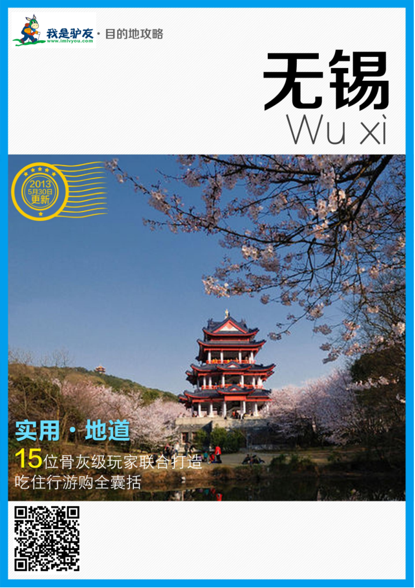
无锡影视基地
样本量：274，平均评分：4.62
平均消费：315.24 元，平均门票：150.0 元，平均停留：4.57 小时
高频季节：冬季(71) / 秋季(71)
高频交通：空调大巴(34) / 高铁+大巴(29) / 飞机+大巴(26)
游客来源：贵州省(13) / 河南省(12) / 湖南省(12) / 湖北省(11) / 陕西省(11)
素材：无锡旅游攻略
基于游客记录清洗结果 + 本地 131 份景点攻略素材自动整合生成。页面按游客样本量和评分排序，方便快速筛选高价值目的地。

样本量：274，平均评分：4.62
平均消费：315.24 元，平均门票：150.0 元，平均停留：4.57 小时
高频季节：冬季(71) / 秋季(71)
高频交通：空调大巴(34) / 高铁+大巴(29) / 飞机+大巴(26)
游客来源：贵州省(13) / 河南省(12) / 湖南省(12) / 湖北省(11) / 陕西省(11)
素材：无锡旅游攻略

样本量：265，平均评分：4.44
平均消费：300.9 元，平均门票：140.0 元，平均停留：4.38 小时
高频季节：秋季(77) / 冬季(67)
高频交通：高铁+大巴(34) / 飞机+大巴(33) / 空调大巴(25)
游客来源：台湾省(14) / 广东省(14) / 天津市(14) / 陕西省(12) / 山西省(12)
素材：北京
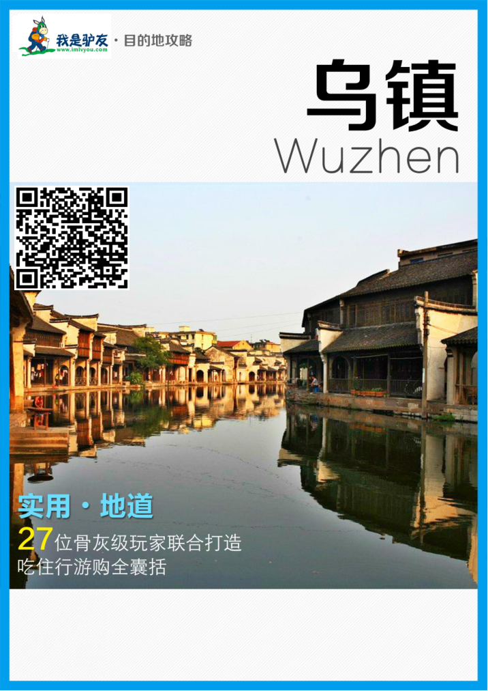
样本量：265，平均评分：4.41
平均消费：325.4 元，平均门票：150.0 元，平均停留：4.58 小时
高频季节：春季(72) / 秋季(71)
高频交通：高铁+大巴(30) / 飞机+大巴(22) / 空调大巴(18)
游客来源：澳门特别行政区(15) / 辽宁省(12) / 甘肃省(11) / 福建省(11) / 四川省(10)
素材：乌镇攻略
样本量：265，平均评分：4.39
平均消费：384.66 元，平均门票：210.0 元，平均停留：4.45 小时
高频季节：冬季(73) / 秋季(68)
高频交通：高铁+大巴(34) / 飞机+大巴(23) / 空调大巴(18)
游客来源：湖南省(13) / 河南省(13) / 江苏省(12) / 甘肃省(12) / 四川省(11)
素材：无锡旅游攻略
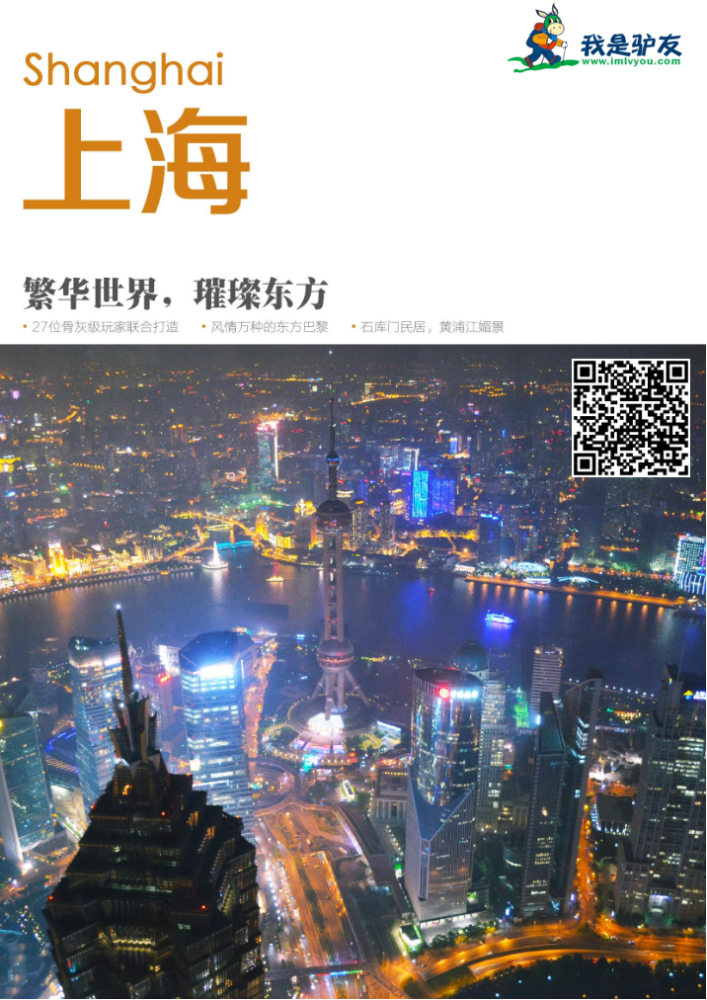
样本量：265，平均评分：4.2
平均消费：212.95 元，平均门票：60.0 元，平均停留：4.51 小时
高频季节：夏季(81) / 春季(70)
高频交通：空调大巴(30) / 飞机+大巴(29) / 高铁+大巴(27)
游客来源：广东省(14) / 山东省(12) / 天津市(11) / 西藏自治区(11) / 安徽省(10)
素材：上海旅游攻略
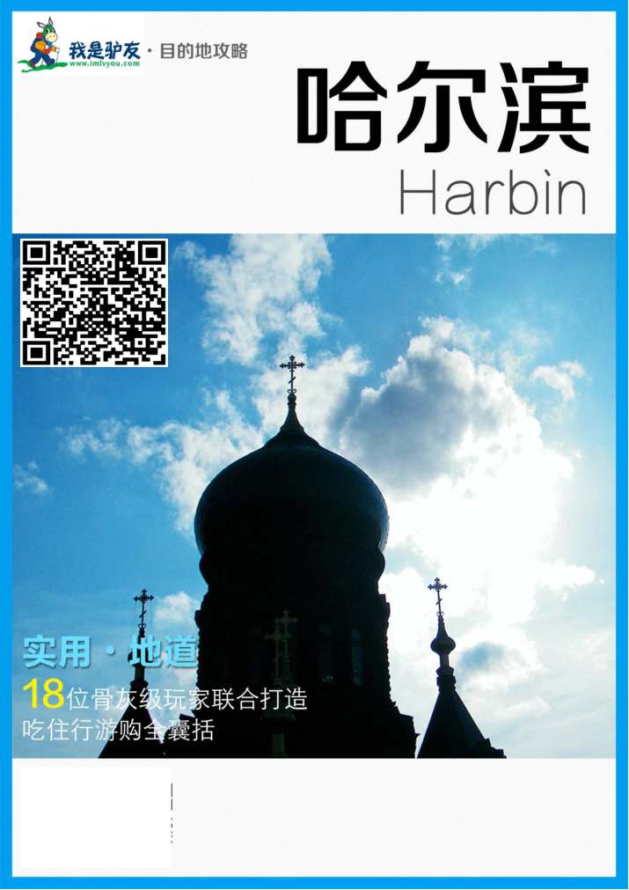
样本量：262，平均评分：4.18
平均消费：522.62 元，平均门票：330.0 元，平均停留：4.65 小时
高频季节：冬季(72) / 秋季(68)
高频交通：空调大巴(35) / 高铁+大巴(28) / 飞机+大巴(27)
游客来源：内蒙古自治区(13) / 浙江省(13) / 广东省(13) / 福建省(12) / 山东省(11)
素材：哈尔滨旅游攻略

样本量：260，平均评分：4.77
平均消费：375.04 元，平均门票：190.0 元，平均停留：4.49 小时
高频季节：秋季(71) / 冬季(70)
高频交通：高铁+大巴(27) / 飞机+大巴(25) / 空调大巴(22)
游客来源：浙江省(13) / 山西省(13) / 甘肃省(12) / 内蒙古自治区(11) / 吉林省(11)
素材：黄山

样本量：260，平均评分：4.33
平均消费：200.41 元，平均门票：40.0 元，平均停留：4.63 小时
高频季节：冬季(75) / 秋季(69)
高频交通：飞机+大巴(28) / 高铁+大巴(27) / 空调大巴(23)
游客来源：广东省(14) / 山东省(13) / 山西省(12) / 甘肃省(11) / 内蒙古自治区(11)
素材：洛阳
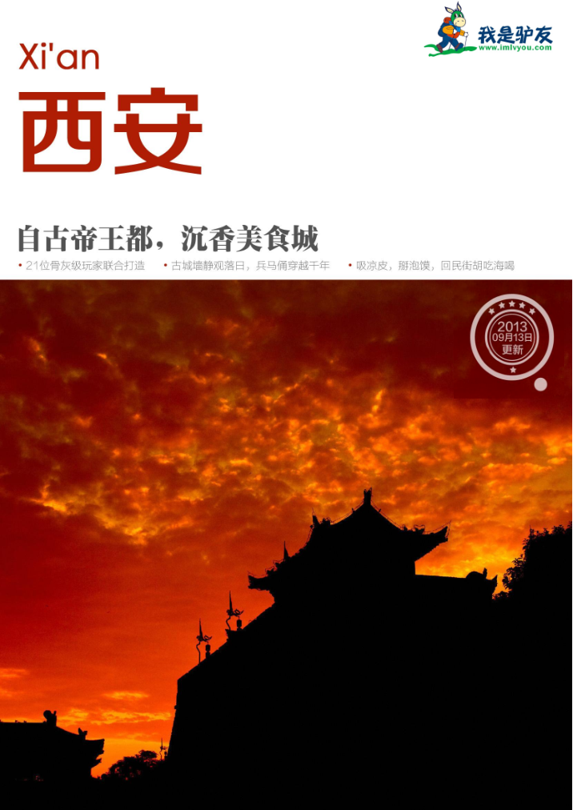
样本量：260，平均评分：4.22
平均消费：247.2 元，平均门票：65.0 元，平均停留：4.33 小时
高频季节：秋季(74) / 夏季(72)
高频交通：高铁+大巴(31) / 空调大巴(25) / 飞机+大巴(22)
游客来源：浙江省(16) / 甘肃省(15) / 湖南省(15) / 澳门特别行政区(11) / 内蒙古自治区(11)
素材：西安

样本量：259，平均评分：4.78
平均消费：547.43 元，平均门票：350.0 元，平均停留：4.8 小时
高频季节：秋季(72) / 春季(66)
高频交通：飞机+大巴(31) / 空调大巴(26) / 高铁+大巴(22)
游客来源：西藏自治区(13) / 湖南省(13) / 上海市(12) / 澳门特别行政区(11) / 福建省(11)
素材：广州旅游攻略
样本量：259，平均评分：4.4
平均消费：235.17 元，平均门票：70.0 元，平均停留：4.37 小时
高频季节：秋季(71) / 夏季(71)
高频交通：高铁+大巴(22) / 飞机+大巴(20) / 空调大巴(20)
游客来源：浙江省(14) / 海南省(13) / 西藏自治区(13) / 河南省(13) / 四川省(13)
素材：未匹配
样本量：258，平均评分：4.48
平均消费：226.26 元，平均门票：50.0 元，平均停留：4.42 小时
高频季节：夏季(74) / 冬季(69)
高频交通：空调大巴(23) / 高铁+大巴(23) / 飞机+大巴(20)
游客来源：台湾省(14) / 辽宁省(13) / 山东省(12) / 香港特别行政区(12) / 河南省(12)
素材：未匹配
样本量：258，平均评分：4.36
平均消费：169.59 元，平均门票：0.0 元，平均停留：4.26 小时
高频季节：秋季(69) / 夏季(68)
高频交通：飞机+大巴(27) / 高铁+大巴(26) / 空调大巴(21)
游客来源：湖北省(14) / 海南省(13) / 陕西省(12) / 浙江省(11) / 河南省(11)
素材：未匹配

样本量：257，平均评分：4.75
平均消费：284.59 元，平均门票：120.0 元，平均停留：4.52 小时
高频季节：夏季(69) / 春季(68)
高频交通：飞机+大巴(31) / 空调大巴(27) / 高铁+大巴(24)
游客来源：陕西省(13) / 湖南省(12) / 澳门特别行政区(12) / 福建省(11) / 河南省(11)
素材：舟山攻略
样本量：257，平均评分：4.08
平均消费：272.55 元，平均门票：90.0 元，平均停留：4.38 小时
高频季节：春季(77) / 夏季(61)
高频交通：飞机+大巴(26) / 空调大巴(24) / 高铁+大巴(19)
游客来源：湖南省(15) / 天津市(15) / 安徽省(13) / 新疆维吾尔自治区(13) / 吉林省(11)
素材：未匹配
样本量：255，平均评分：4.76
平均消费：287.36 元，平均门票：100.0 元，平均停留：4.39 小时
高频季节：夏季(68) / 秋季(66)
高频交通：高铁+大巴(29) / 空调大巴(24) / 飞机+大巴(16)
游客来源：湖北省(15) / 澳门特别行政区(14) / 江苏省(12) / 浙江省(11) / 重庆市(11)
素材：未匹配
样本量：255，平均评分：4.53
平均消费：213.31 元，平均门票：30.0 元，平均停留：4.43 小时
高频季节：夏季(78) / 冬季(66)
高频交通：高铁+大巴(36) / 空调大巴(27) / 飞机+大巴(26)
游客来源：台湾省(15) / 陕西省(14) / 甘肃省(12) / 澳门特别行政区(11) / 广东省(11)
素材：未匹配
样本量：255，平均评分：4.46
平均消费：240.57 元，平均门票：60.0 元，平均停留：4.45 小时
高频季节：夏季(85) / 秋季(62)
高频交通：高铁+大巴(27) / 飞机+大巴(26) / 空调大巴(25)
游客来源：云南省(13) / 广西壮族自治区(12) / 福建省(12) / 西藏自治区(11) / 湖南省(11)
素材：未匹配
样本量：255，平均评分：4.39
平均消费：197.43 元，平均门票：30.0 元，平均停留：4.49 小时
高频季节：春季(74) / 夏季(69)
高频交通：空调大巴(25) / 高铁+大巴(21) / 飞机+大巴(21)
游客来源：北京市(13) / 山西省(12) / 河北省(12) / 福建省(11) / 广西壮族自治区(11)
素材：未匹配
样本量：255，平均评分：4.02
平均消费：250.22 元，平均门票：60.0 元，平均停留：4.5 小时
高频季节：秋季(69) / 冬季(67)
高频交通：空调大巴(33) / 高铁+大巴(31) / 飞机+大巴(26)
游客来源：甘肃省(17) / 湖北省(13) / 重庆市(12) / 北京市(11) / 山东省(11)
素材：未匹配
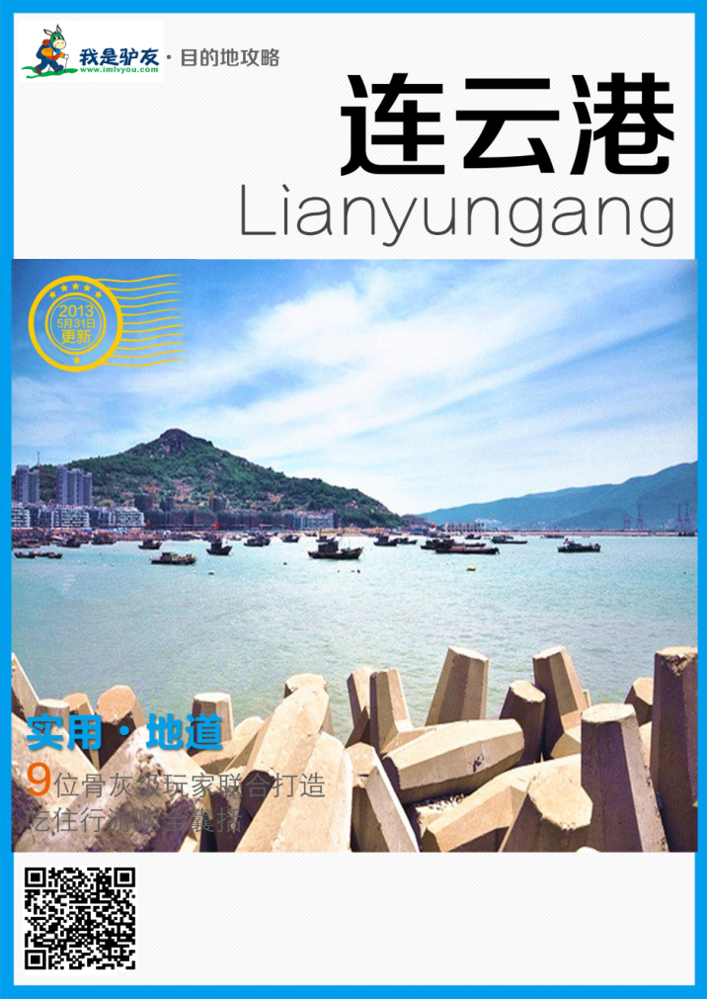
样本量：254，平均评分：4.67
平均消费：264.26 元，平均门票：90.0 元，平均停留：4.32 小时
高频季节：冬季(71) / 秋季(71)
高频交通：飞机+大巴(26) / 空调大巴(22) / 高铁+大巴(21)
游客来源：河南省(15) / 江西省(14) / 天津市(12) / 台湾省(11) / 浙江省(11)
素材：连云港旅游攻略.1

样本量：254，平均评分：4.44
平均消费：512.81 元，平均门票：320.0 元，平均停留：4.43 小时
高频季节：冬季(71) / 秋季(68)
高频交通：空调大巴(28) / 高铁+大巴(27) / 飞机+大巴(25)
游客来源：天津市(14) / 广东省(13) / 山西省(13) / 湖南省(10) / 安徽省(10)
素材：杭州攻略
样本量：254，平均评分：4.43
平均消费：284.68 元，平均门票：91.0 元，平均停留：4.44 小时
高频季节：春季(80) / 秋季(68)
高频交通：飞机+大巴(33) / 高铁+大巴(26) / 空调大巴(15)
游客来源：北京市(13) / 天津市(13) / 香港特别行政区(11) / 青海省(11) / 广东省(11)
素材：黄山
样本量：254，平均评分：4.12
平均消费：249.04 元，平均门票：65.0 元，平均停留：4.55 小时
高频季节：春季(75) / 夏季(65)
高频交通：飞机+大巴(26) / 空调大巴(22) / 高铁+大巴(16)
游客来源：北京市(12) / 天津市(12) / 福建省(11) / 台湾省(10) / 海南省(9)
素材：未匹配
样本量：253，平均评分：4.62
平均消费：416.66 元，平均门票：220.0 元，平均停留：4.46 小时
高频季节：冬季(71) / 秋季(68)
高频交通：空调大巴(34) / 飞机+大巴(23) / 高铁+大巴(22)
游客来源：河南省(13) / 湖北省(11) / 福建省(11) / 北京市(11) / 天津市(10)
素材：上海旅游攻略

样本量：253，平均评分：4.5
平均消费：190.83 元，平均门票：10.0 元，平均停留：4.33 小时
高频季节：冬季(69) / 夏季(62)
高频交通：飞机+大巴(30) / 高铁+大巴(26) / 空调大巴(18)
游客来源：新疆维吾尔自治区(12) / 安徽省(11) / 宁夏回族自治区(10) / 河南省(10) / 香港特别行政区(10)
素材：北海旅游攻略
样本量：253，平均评分：4.28
平均消费：246.25 元，平均门票：75.0 元，平均停留：4.32 小时
高频季节：春季(69) / 冬季(68)
高频交通：空调大巴(30) / 飞机+大巴(20) / 高铁+大巴(20)
游客来源：广东省(13) / 福建省(13) / 浙江省(11) / 青海省(11) / 吉林省(10)
素材：大理
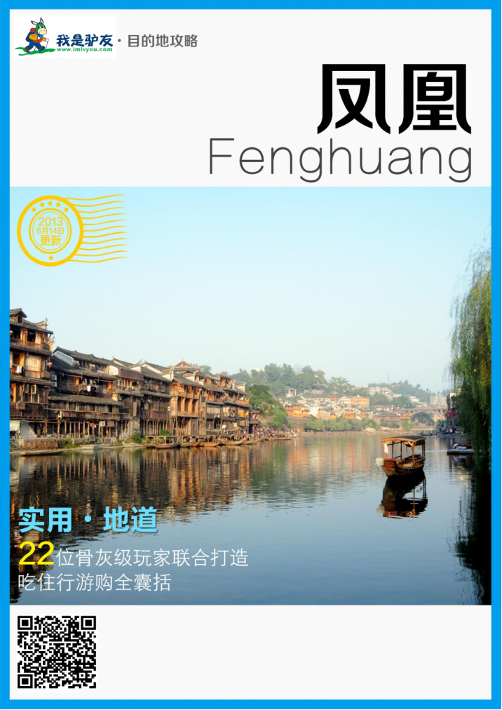
样本量：253，平均评分：4.21
平均消费：318.71 元，平均门票：148.0 元，平均停留：4.38 小时
高频季节：冬季(79) / 夏季(61)
高频交通：高铁+大巴(32) / 空调大巴(21) / 飞机+大巴(17)
游客来源：广东省(15) / 海南省(12) / 上海市(11) / 江苏省(11) / 山东省(10)
素材：凤凰
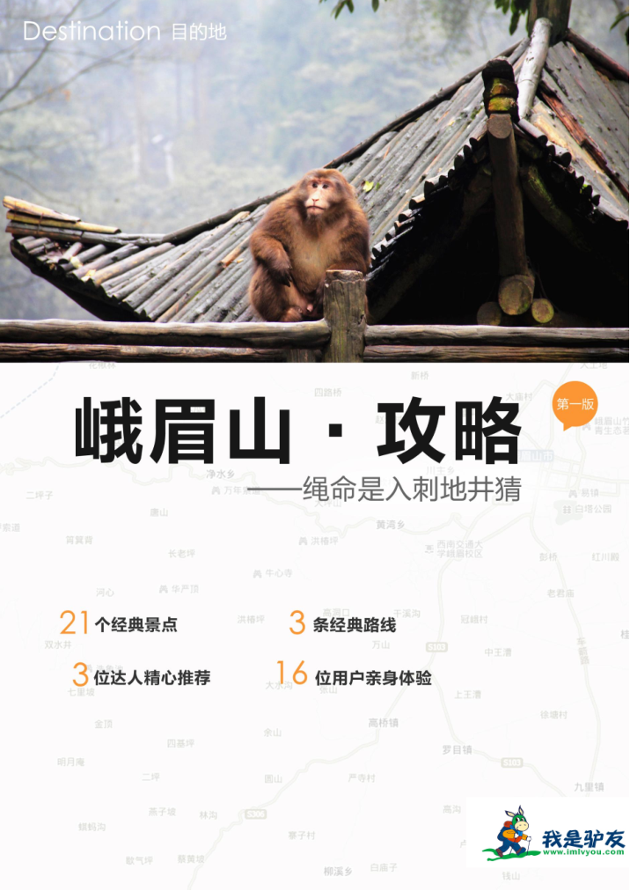
样本量：252，平均评分：4.66
平均消费：348.14 元，平均门票：160.0 元，平均停留：4.61 小时
高频季节：夏季(75) / 秋季(70)
高频交通：飞机+大巴(31) / 高铁+大巴(26) / 空调大巴(26)
游客来源：安徽省(14) / 北京市(12) / 青海省(11) / 江苏省(11) / 福建省(10)
素材：峨眉山旅游攻略
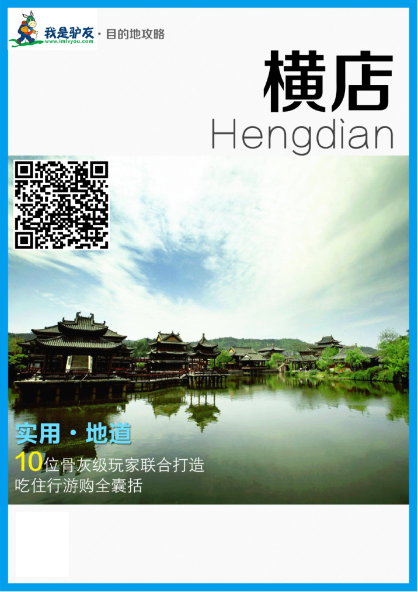
样本量：252，平均评分：4.52
平均消费：496.26 元，平均门票：310.0 元，平均停留：4.47 小时
高频季节：冬季(67) / 秋季(64)
高频交通：高铁+大巴(31) / 空调大巴(26) / 飞机+大巴(25)
游客来源：青海省(15) / 安徽省(12) / 陕西省(12) / 海南省(11) / 香港特别行政区(11)
素材：横店攻略
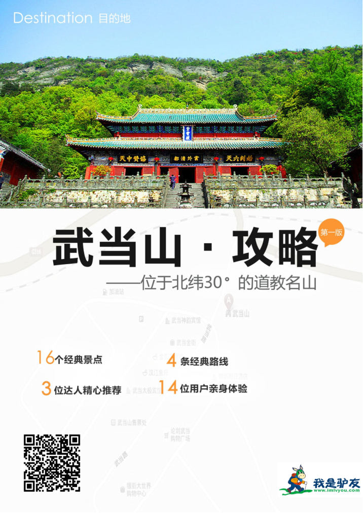
样本量：252，平均评分：4.49
平均消费：413.55 元，平均门票：243.0 元，平均停留：4.53 小时
高频季节：秋季(69) / 春季(65)
高频交通：空调大巴(29) / 飞机+大巴(26) / 高铁+大巴(26)
游客来源：重庆市(12) / 四川省(11) / 天津市(11) / 河南省(10) / 澳门特别行政区(10)
素材：武当山
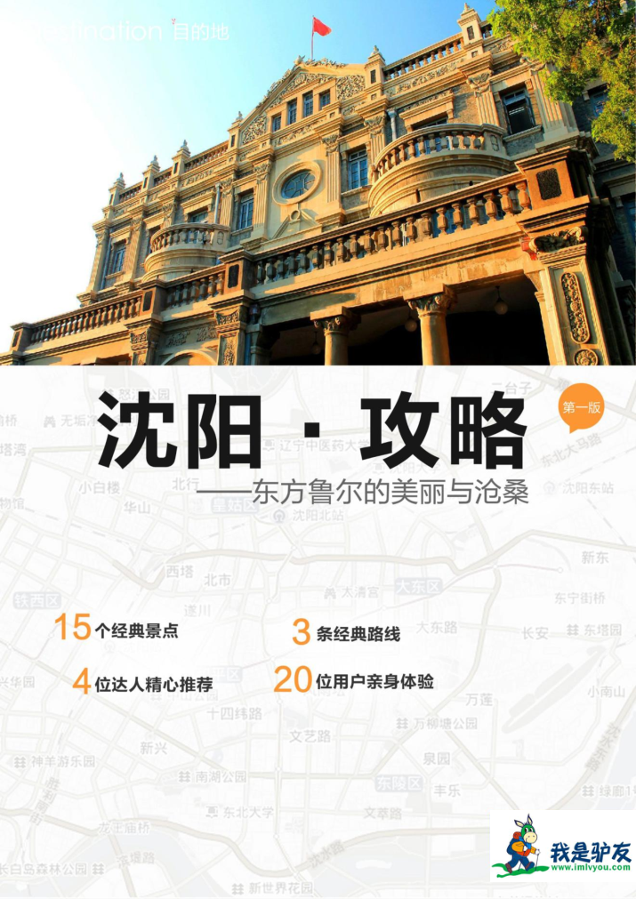
样本量：252，平均评分：4.4
平均消费：172.33 元，平均门票：0.0 元，平均停留：4.51 小时
高频季节：夏季(78) / 春季(64)
高频交通：空调大巴(29) / 高铁+大巴(24) / 飞机+大巴(24)
游客来源：云南省(15) / 甘肃省(13) / 江苏省(13) / 河南省(11) / 香港特别行政区(10)
素材：沈阳旅游攻略
样本量：252，平均评分：4.21
平均消费：235.16 元，平均门票：60.0 元，平均停留：4.63 小时
高频季节：春季(73) / 冬季(67)
高频交通：高铁+大巴(32) / 飞机+大巴(31) / 空调大巴(19)
游客来源：四川省(14) / 广东省(13) / 安徽省(13) / 上海市(12) / 西藏自治区(12)
素材：未匹配
样本量：251，平均评分：4.48
平均消费：272.65 元，平均门票：80.0 元，平均停留：4.67 小时
高频季节：夏季(70) / 冬季(69)
高频交通：飞机+大巴(24) / 空调大巴(21) / 高铁+大巴(18)
游客来源：上海市(13) / 四川省(12) / 河南省(11) / 天津市(11) / 香港特别行政区(10)
素材：上海旅游攻略

样本量：251，平均评分：4.39
平均消费：154.4 元，平均门票：0.0 元，平均停留：4.49 小时
高频季节：秋季(71) / 春季(65)
高频交通：飞机+大巴(26) / 高铁+大巴(24) / 空调大巴(22)
游客来源：辽宁省(15) / 安徽省(11) / 澳门特别行政区(11) / 福建省(11) / 河北省(11)
素材：长沙
样本量：251，平均评分：4.3
平均消费：236.66 元，平均门票：50.0 元，平均停留：4.29 小时
高频季节：春季(71) / 夏季(67)
高频交通：高铁+大巴(28) / 飞机+大巴(27) / 空调大巴(22)
游客来源：山西省(16) / 香港特别行政区(12) / 江苏省(12) / 宁夏回族自治区(11) / 吉林省(9)
素材：未匹配
样本量：251，平均评分：4.28
平均消费：263.47 元，平均门票：90.0 元，平均停留：4.62 小时
高频季节：春季(75) / 冬季(69)
高频交通：空调大巴(30) / 高铁+大巴(28) / 飞机+大巴(27)
游客来源：台湾省(11) / 安徽省(10) / 云南省(10) / 辽宁省(10) / 西藏自治区(10)
素材：未匹配

样本量：251，平均评分：4.0
平均消费：206.75 元，平均门票：30.0 元，平均停留：4.47 小时
高频季节：秋季(71) / 夏季(62)
高频交通：空调大巴(30) / 高铁+大巴(29) / 飞机+大巴(24)
游客来源：香港特别行政区(13) / 江西省(12) / 河南省(11) / 山东省(11) / 海南省(11)
素材：济南旅游攻略
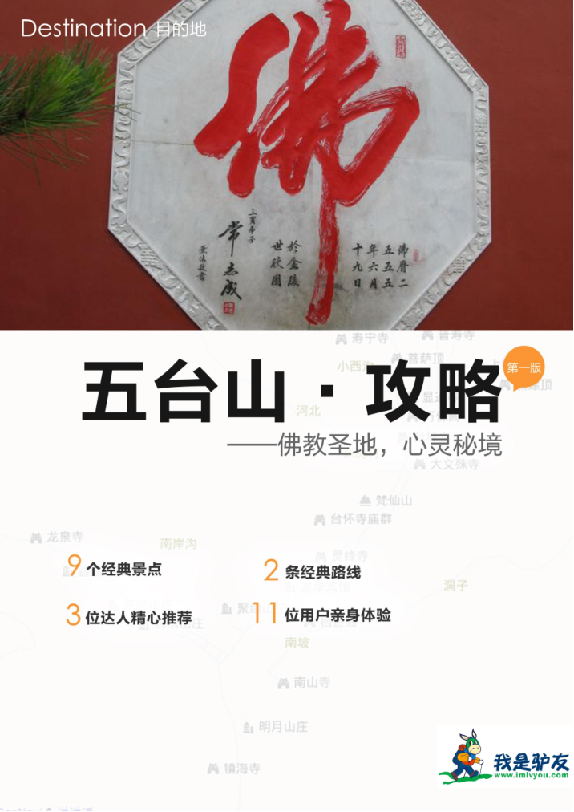
样本量：250，平均评分：4.66
平均消费：336.13 元，平均门票：135.0 元，平均停留：4.33 小时
高频季节：夏季(67) / 春季(67)
高频交通：高铁+大巴(26) / 空调大巴(23) / 飞机+大巴(18)
游客来源：北京市(12) / 河南省(12) / 江苏省(11) / 上海市(11) / 宁夏回族自治区(10)
素材：五台山
样本量：250，平均评分：4.59
平均消费：302.24 元，平均门票：120.0 元，平均停留：4.71 小时
高频季节：夏季(72) / 秋季(65)
高频交通：高铁+大巴(27) / 空调大巴(25) / 飞机+大巴(17)
游客来源：台湾省(14) / 天津市(13) / 上海市(12) / 福建省(12) / 北京市(12)
素材：西安
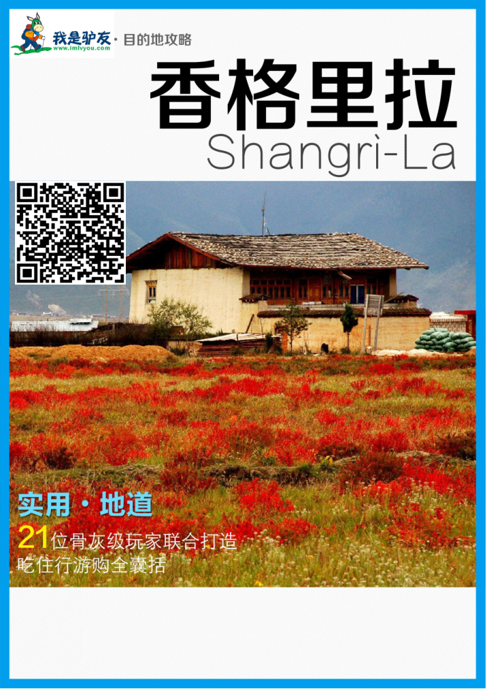
样本量：250，平均评分：4.4
平均消费：189.3 元，平均门票：0.0 元，平均停留：4.56 小时
高频季节：夏季(66) / 冬季(65)
高频交通：高铁+大巴(24) / 飞机+大巴(20) / 空调大巴(20)
游客来源：湖北省(14) / 湖南省(13) / 浙江省(10) / 河北省(10) / 宁夏回族自治区(10)
素材：香格里拉
样本量：250，平均评分：4.08
平均消费：274.96 元，平均门票：102.0 元，平均停留：4.42 小时
高频季节：秋季(72) / 春季(67)
高频交通：空调大巴(27) / 高铁+大巴(25) / 飞机+大巴(23)
游客来源：广西壮族自治区(12) / 广东省(12) / 山西省(12) / 江西省(11) / 福建省(10)
素材：未匹配
样本量：250，平均评分：3.98
平均消费：187.77 元，平均门票：20.0 元，平均停留：4.48 小时
高频季节：夏季(71) / 秋季(68)
高频交通：飞机+大巴(26) / 空调大巴(25) / 高铁+大巴(22)
游客来源：海南省(12) / 湖南省(12) / 江苏省(12) / 浙江省(11) / 广东省(11)
素材：未匹配
样本量：249，平均评分：4.64
平均消费：177.03 元，平均门票：0.0 元，平均停留：4.53 小时
高频季节：秋季(68) / 冬季(67)
高频交通：飞机+大巴(27) / 高铁+大巴(20) / 空调大巴(18)
游客来源：四川省(15) / 吉林省(14) / 天津市(11) / 广东省(10) / 台湾省(10)
素材：未匹配

样本量：249，平均评分：4.59
平均消费：186.23 元，平均门票：0.0 元，平均停留：4.57 小时
高频季节：冬季(64) / 秋季(63)
高频交通：空调大巴(28) / 高铁+大巴(25) / 飞机+大巴(23)
游客来源：福建省(13) / 广西壮族自治区(12) / 安徽省(11) / 天津市(11) / 江苏省(11)
素材：武汉
样本量：248，平均评分：4.83
平均消费：248.22 元，平均门票：78.0 元，平均停留：4.4 小时
高频季节：冬季(70) / 春季(68)
高频交通：高铁+大巴(28) / 空调大巴(27) / 飞机+大巴(13)
游客来源：陕西省(13) / 青海省(11) / 浙江省(10) / 湖北省(10) / 甘肃省(9)
素材：未匹配
样本量：248，平均评分：4.76
平均消费：270.9 元，平均门票：95.0 元，平均停留：4.33 小时
高频季节：秋季(69) / 夏季(64)
高频交通：高铁+大巴(29) / 飞机+大巴(24) / 空调大巴(21)
游客来源：江苏省(12) / 湖南省(11) / 河北省(11) / 湖北省(11) / 香港特别行政区(11)
素材：未匹配
样本量：248，平均评分：4.76
平均消费：291.77 元，平均门票：95.0 元，平均停留：4.43 小时
高频季节：秋季(69) / 冬季(68)
高频交通：高铁+大巴(32) / 空调大巴(23) / 飞机+大巴(15)
游客来源：宁夏回族自治区(11) / 新疆维吾尔自治区(11) / 台湾省(11) / 安徽省(10) / 辽宁省(10)
素材：西塘

样本量：248，平均评分：4.43
平均消费：293.29 元，平均门票：125.0 元，平均停留：4.34 小时
高频季节：春季(68) / 冬季(66)
高频交通：飞机+大巴(28) / 高铁+大巴(25) / 空调大巴(21)
游客来源：宁夏回族自治区(16) / 辽宁省(14) / 江苏省(12) / 天津市(12) / 黑龙江省(10)
素材：长白山旅游攻略

样本量：248，平均评分：4.42
平均消费：185.61 元，平均门票：0.0 元，平均停留：4.47 小时
高频季节：夏季(76) / 春季(64)
高频交通：飞机+大巴(28) / 高铁+大巴(25) / 空调大巴(23)
游客来源：河南省(12) / 辽宁省(11) / 西藏自治区(11) / 广东省(11) / 湖南省(11)
素材：合肥旅游攻略
样本量：248，平均评分：4.4
平均消费：254.83 元，平均门票：100.0 元，平均停留：4.44 小时
高频季节：春季(68) / 秋季(64)
高频交通：飞机+大巴(36) / 高铁+大巴(24) / 空调大巴(15)
游客来源：澳门特别行政区(17) / 江苏省(13) / 辽宁省(12) / 山西省(11) / 重庆市(11)
素材：未匹配
样本量：248，平均评分：4.29
平均消费：205.75 元，平均门票：30.0 元，平均停留：4.42 小时
高频季节：秋季(68) / 春季(63)
高频交通：空调大巴(30) / 高铁+大巴(23) / 飞机+大巴(21)
游客来源：安徽省(15) / 湖南省(12) / 河南省(12) / 陕西省(11) / 浙江省(11)
素材：上海旅游攻略
样本量：248，平均评分：4.26
平均消费：233.89 元，平均门票：55.0 元，平均停留：4.71 小时
高频季节：秋季(68) / 冬季(65)
高频交通：高铁+大巴(27) / 空调大巴(27) / 飞机+大巴(13)
游客来源：北京市(14) / 天津市(14) / 海南省(11) / 四川省(10) / 重庆市(10)
素材：桂林旅游攻略
样本量：248，平均评分：4.22
平均消费：310.67 元，平均门票：128.0 元，平均停留：4.69 小时
高频季节：春季(67) / 冬季(64)
高频交通：飞机+大巴(29) / 高铁+大巴(28) / 空调大巴(23)
游客来源：西藏自治区(12) / 江西省(11) / 澳门特别行政区(10) / 云南省(10) / 辽宁省(10)
素材：未匹配
样本量：247，平均评分：4.82
平均消费：225.85 元，平均门票：60.0 元，平均停留：4.35 小时
高频季节：冬季(75) / 夏季(59)
高频交通：高铁+大巴(26) / 空调大巴(25) / 飞机+大巴(16)
游客来源：海南省(14) / 江西省(12) / 浙江省(12) / 北京市(11) / 河北省(11)
素材：未匹配
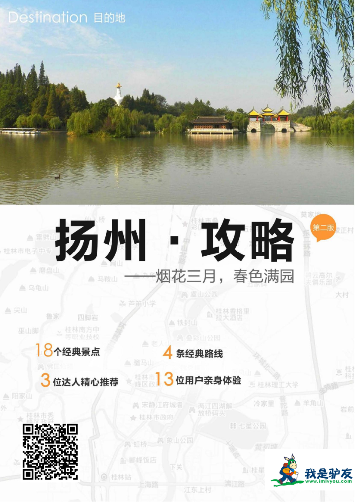
样本量：247，平均评分：4.56
平均消费：324.62 元，平均门票：150.0 元，平均停留：4.54 小时
高频季节：夏季(72) / 春季(69)
高频交通：高铁+大巴(27) / 空调大巴(26) / 飞机+大巴(19)
游客来源：内蒙古自治区(13) / 安徽省(11) / 四川省(11) / 西藏自治区(11) / 云南省(11)
素材：扬州旅游攻略

样本量：247，平均评分：4.51
平均消费：335.68 元，平均门票：160.0 元，平均停留：4.6 小时
高频季节：春季(68) / 秋季(66)
高频交通：空调大巴(35) / 飞机+大巴(23) / 高铁+大巴(17)
游客来源：天津市(15) / 台湾省(13) / 甘肃省(12) / 江西省(11) / 吉林省(10)
素材：九华山旅游攻略
样本量：247，平均评分：4.5
平均消费：351.45 元，平均门票：200.0 元，平均停留：4.32 小时
高频季节：秋季(70) / 春季(61)
高频交通：空调大巴(32) / 飞机+大巴(26) / 高铁+大巴(24)
游客来源：安徽省(15) / 湖南省(14) / 浙江省(12) / 江苏省(12) / 澳门特别行政区(10)
素材：长沙
样本量：247，平均评分：4.47
平均消费：342.7 元，平均门票：180.0 元，平均停留：4.48 小时
高频季节：秋季(74) / 冬季(59)
高频交通：空调大巴(30) / 飞机+大巴(26) / 高铁+大巴(22)
游客来源：上海市(13) / 福建省(12) / 北京市(11) / 江西省(11) / 山西省(10)
素材：未匹配
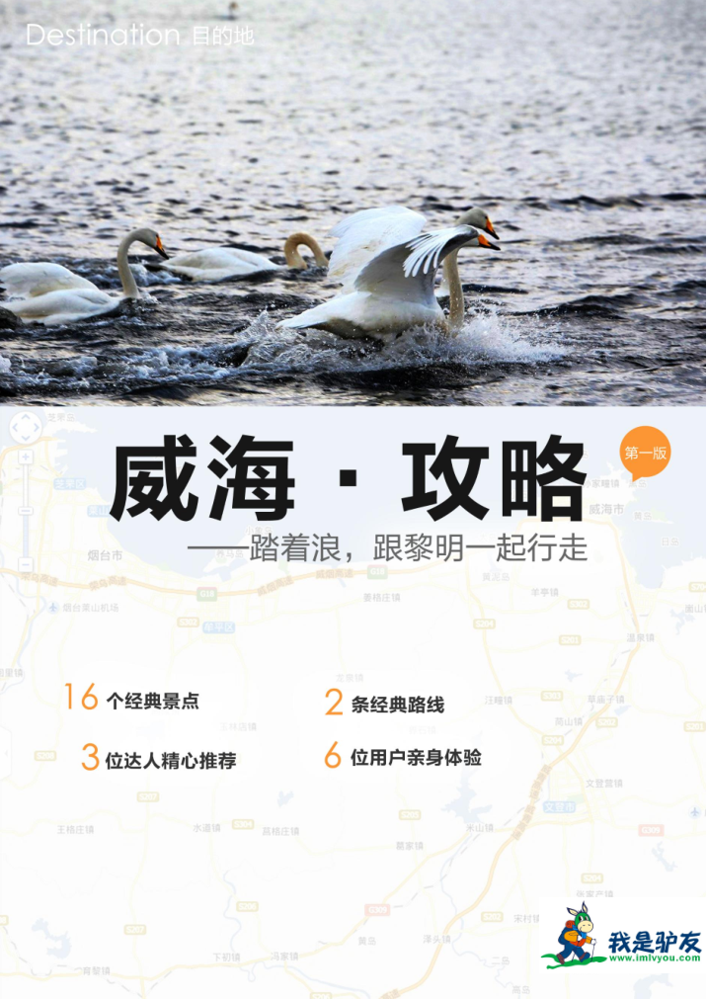
样本量：247，平均评分：4.38
平均消费：293.39 元，平均门票：130.0 元，平均停留：4.6 小时
高频季节：春季(68) / 夏季(65)
高频交通：空调大巴(21) / 飞机+大巴(19) / 高铁+大巴(17)
游客来源：陕西省(18) / 湖南省(13) / 浙江省(12) / 湖北省(11) / 四川省(9)
素材：威海旅游攻略
样本量：247，平均评分：4.16
平均消费：262.58 元，平均门票：100.0 元，平均停留：4.71 小时
高频季节：春季(80) / 夏季(61)
高频交通：空调大巴(30) / 高铁+大巴(22) / 飞机+大巴(18)
游客来源：江苏省(16) / 四川省(11) / 广东省(11) / 西藏自治区(11) / 香港特别行政区(10)
素材：未匹配
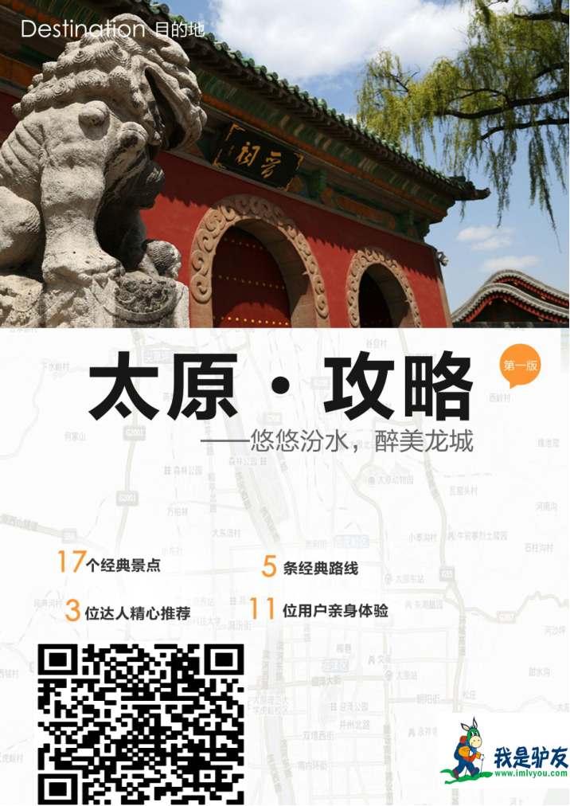
样本量：247，平均评分：4.0
平均消费：267.09 元，平均门票：80.0 元，平均停留：4.61 小时
高频季节：冬季(75) / 春季(63)
高频交通：高铁+大巴(25) / 空调大巴(23) / 飞机+大巴(22)
游客来源：广东省(11) / 上海市(11) / 福建省(11) / 吉林省(10) / 贵州省(10)
素材：太原
样本量：246，平均评分：4.88
平均消费：306.2 元，平均门票：115.0 元，平均停留：4.43 小时
高频季节：夏季(69) / 春季(62)
高频交通：空调大巴(29) / 高铁+大巴(25) / 飞机+大巴(21)
游客来源：湖南省(15) / 贵州省(14) / 四川省(11) / 湖北省(10) / 河北省(10)
素材：未匹配
样本量：246，平均评分：4.76
平均消费：319.7 元，平均门票：132.0 元，平均停留：4.45 小时
高频季节：春季(70) / 秋季(66)
高频交通：飞机+大巴(27) / 高铁+大巴(25) / 空调大巴(19)
游客来源：海南省(12) / 四川省(11) / 江西省(11) / 内蒙古自治区(10) / 山东省(10)
素材：未匹配
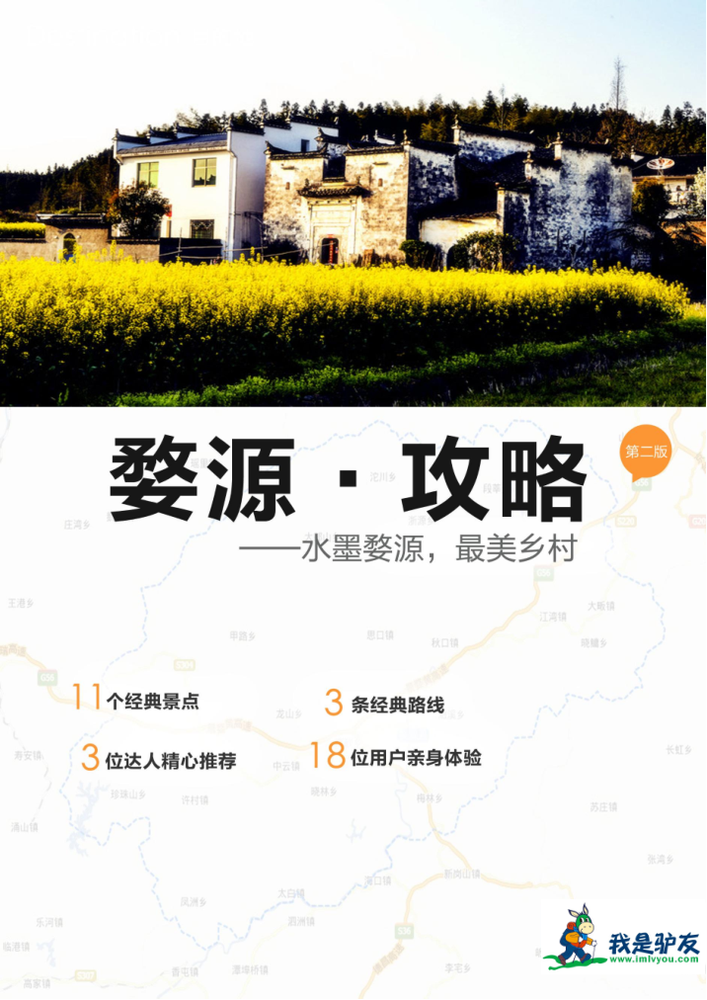
样本量：246，平均评分：4.62
平均消费：368.12 元，平均门票：210.0 元，平均停留：4.41 小时
高频季节：夏季(67) / 春季(66)
高频交通：高铁+大巴(32) / 飞机+大巴(24) / 空调大巴(21)
游客来源：新疆维吾尔自治区(12) / 吉林省(12) / 天津市(12) / 海南省(11) / 辽宁省(11)
素材：婺源

样本量：246，平均评分：4.45
平均消费：195.63 元，平均门票：0.0 元，平均停留：4.44 小时
高频季节：夏季(73) / 春季(69)
高频交通：飞机+大巴(28) / 空调大巴(26) / 高铁+大巴(23)
游客来源：澳门特别行政区(14) / 湖南省(13) / 北京市(11) / 香港特别行政区(11) / 广东省(11)
素材：惠州旅游攻略
样本量：246，平均评分：4.42
平均消费：224.14 元，平均门票：50.0 元，平均停留：4.51 小时
高频季节：夏季(66) / 秋季(61)
高频交通：飞机+大巴(27) / 高铁+大巴(22) / 空调大巴(21)
游客来源：陕西省(13) / 青海省(13) / 湖南省(11) / 江西省(11) / 辽宁省(10)
素材：未匹配
样本量：245，平均评分：4.5
平均消费：179.82 元，平均门票：0.0 元，平均停留：4.57 小时
高频季节：冬季(65) / 秋季(64)
高频交通：高铁+大巴(27) / 空调大巴(20) / 飞机+大巴(19)
游客来源：香港特别行政区(12) / 江苏省(11) / 辽宁省(11) / 福建省(11) / 黑龙江省(10)
素材：合肥旅游攻略
样本量：245，平均评分：4.41
平均消费：292.12 元，平均门票：115.0 元，平均停留：4.45 小时
高频季节：春季(70) / 夏季(64)
高频交通：空调大巴(31) / 飞机+大巴(22) / 高铁+大巴(18)
游客来源：广东省(14) / 重庆市(12) / 天津市(11) / 江苏省(11) / 海南省(10)
素材：未匹配
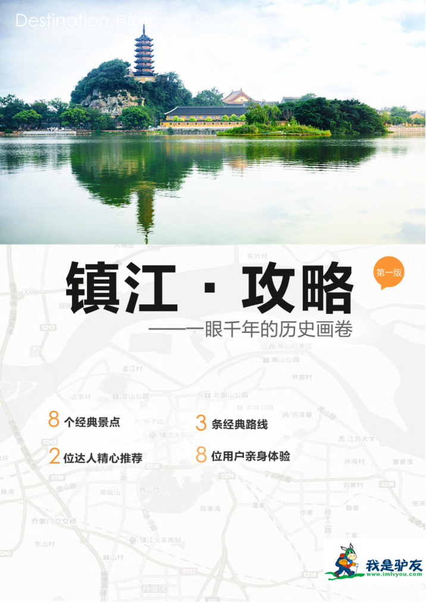
样本量：245，平均评分：4.27
平均消费：272.42 元，平均门票：120.0 元，平均停留：4.58 小时
高频季节：冬季(65) / 秋季(62)
高频交通：飞机+大巴(26) / 高铁+大巴(25) / 空调大巴(25)
游客来源：吉林省(16) / 香港特别行政区(12) / 河南省(11) / 甘肃省(11) / 湖北省(10)
素材：镇江旅游攻略
样本量：245，平均评分：4.21
平均消费：178.32 元，平均门票：0.0 元，平均停留：4.35 小时
高频季节：夏季(65) / 冬季(63)
高频交通：飞机+大巴(27) / 高铁+大巴(20) / 空调大巴(20)
游客来源：广西壮族自治区(13) / 上海市(12) / 甘肃省(12) / 山西省(9) / 海南省(9)
素材：上海旅游攻略
样本量：245，平均评分：4.19
平均消费：239.47 元，平均门票：60.0 元，平均停留：4.56 小时
高频季节：春季(68) / 秋季(65)
高频交通：空调大巴(29) / 高铁+大巴(26) / 飞机+大巴(24)
游客来源：河南省(16) / 香港特别行政区(12) / 北京市(11) / 江苏省(11) / 上海市(11)
素材：未匹配
样本量：244，平均评分：4.83
平均消费：305.84 元，平均门票：140.0 元，平均停留：4.56 小时
高频季节：秋季(65) / 夏季(65)
高频交通：高铁+大巴(32) / 飞机+大巴(26) / 空调大巴(16)
游客来源：北京市(14) / 辽宁省(13) / 台湾省(12) / 黑龙江省(11) / 四川省(10)
素材：未匹配
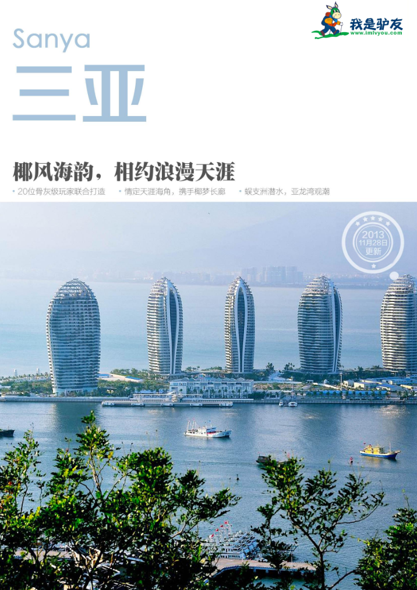
样本量：244，平均评分：4.67
平均消费：258.83 元，平均门票：81.0 元，平均停留：4.65 小时
高频季节：秋季(66) / 夏季(65)
高频交通：飞机+大巴(26) / 高铁+大巴(23) / 空调大巴(20)
游客来源：四川省(13) / 福建省(12) / 重庆市(12) / 贵州省(9) / 台湾省(9)
素材：三亚旅游攻略

样本量：244，平均评分：4.62
平均消费：311.45 元，平均门票：130.0 元，平均停留：4.48 小时
高频季节：夏季(72) / 秋季(71)
高频交通：空调大巴(28) / 飞机+大巴(23) / 高铁+大巴(19)
游客来源：福建省(15) / 澳门特别行政区(13) / 新疆维吾尔自治区(11) / 山西省(11) / 云南省(11)
素材：丽江攻略

样本量：244，平均评分：4.42
平均消费：328.07 元，平均门票：130.0 元，平均停留：4.47 小时
高频季节：冬季(69) / 春季(65)
高频交通：高铁+大巴(30) / 空调大巴(22) / 飞机+大巴(22)
游客来源：河南省(13) / 青海省(11) / 北京市(11) / 福建省(11) / 澳门特别行政区(10)
素材：昆明
样本量：244，平均评分：4.4
平均消费：249.18 元，平均门票：95.0 元，平均停留：4.33 小时
高频季节：秋季(68) / 夏季(65)
高频交通：空调大巴(27) / 飞机+大巴(25) / 高铁+大巴(23)
游客来源：新疆维吾尔自治区(13) / 澳门特别行政区(12) / 甘肃省(11) / 江苏省(11) / 安徽省(11)
素材：未匹配

样本量：244，平均评分：4.4
平均消费：179.42 元，平均门票：0.0 元，平均停留：4.44 小时
高频季节：秋季(66) / 冬季(61)
高频交通：空调大巴(26) / 飞机+大巴(23) / 高铁+大巴(21)
游客来源：江苏省(14) / 西藏自治区(12) / 贵州省(11) / 江西省(11) / 黑龙江省(10)
素材：绍兴
样本量：244，平均评分：4.39
平均消费：242.86 元，平均门票：60.0 元，平均停留：4.52 小时
高频季节：秋季(68) / 春季(61)
高频交通：空调大巴(25) / 高铁+大巴(21) / 飞机+大巴(19)
游客来源：陕西省(12) / 湖南省(12) / 安徽省(10) / 甘肃省(10) / 天津市(10)
素材：未匹配
样本量：244，平均评分：4.37
平均消费：251.72 元，平均门票：68.0 元，平均停留：4.34 小时
高频季节：冬季(66) / 春季(63)
高频交通：飞机+大巴(30) / 空调大巴(25) / 高铁+大巴(25)
游客来源：福建省(14) / 安徽省(13) / 甘肃省(11) / 辽宁省(11) / 重庆市(11)
素材：未匹配
样本量：244，平均评分：4.3
平均消费：216.86 元，平均门票：40.0 元，平均停留：4.61 小时
高频季节：春季(72) / 冬季(63)
高频交通：空调大巴(30) / 高铁+大巴(27) / 飞机+大巴(15)
游客来源：广西壮族自治区(13) / 台湾省(13) / 云南省(12) / 宁夏回族自治区(12) / 青海省(11)
素材：未匹配
样本量：244，平均评分：4.27
平均消费：184.2 元，平均门票：30.0 元，平均停留：4.44 小时
高频季节：秋季(78) / 冬季(57)
高频交通：空调大巴(29) / 飞机+大巴(24) / 高铁+大巴(22)
游客来源：陕西省(12) / 内蒙古自治区(12) / 贵州省(11) / 四川省(11) / 江西省(10)
素材：济南旅游攻略
样本量：244，平均评分：4.16
平均消费：167.92 元，平均门票：0.0 元，平均停留：4.66 小时
高频季节：春季(70) / 秋季(65)
高频交通：空调大巴(27) / 高铁+大巴(24) / 飞机+大巴(20)
游客来源：安徽省(15) / 山东省(14) / 海南省(10) / 香港特别行政区(10) / 内蒙古自治区(9)
素材：北京
样本量：244，平均评分：4.13
平均消费：258.99 元，平均门票：80.0 元，平均停留：4.76 小时
高频季节：冬季(66) / 春季(64)
高频交通：高铁+大巴(34) / 飞机+大巴(20) / 空调大巴(19)
游客来源：浙江省(11) / 四川省(11) / 湖南省(10) / 海南省(10) / 山西省(10)
素材：未匹配
样本量：244，平均评分：4.09
平均消费：345.1 元，平均门票：180.0 元，平均停留：4.49 小时
高频季节：春季(66) / 秋季(61)
高频交通：空调大巴(24) / 飞机+大巴(24) / 高铁+大巴(24)
游客来源：西藏自治区(13) / 山西省(13) / 湖北省(11) / 青海省(11) / 吉林省(10)
素材：上海旅游攻略
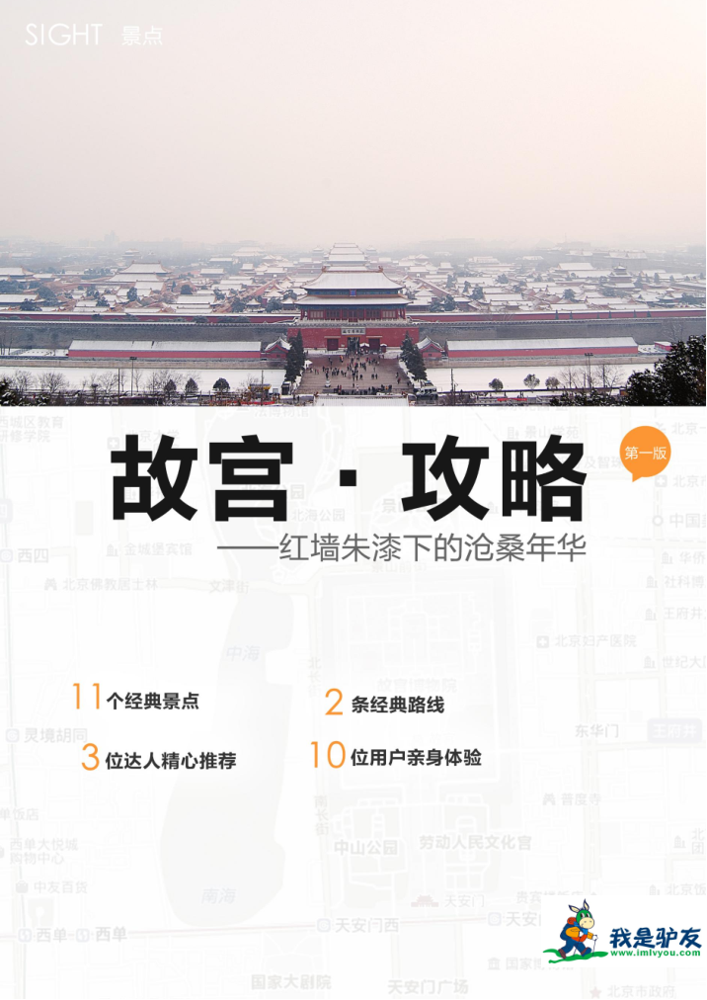
样本量：244，平均评分：4.09
平均消费：242.04 元，平均门票：60.0 元，平均停留：4.59 小时
高频季节：秋季(73) / 夏季(63)
高频交通：高铁+大巴(28) / 飞机+大巴(24) / 空调大巴(22)
游客来源：云南省(14) / 陕西省(14) / 江西省(12) / 江苏省(12) / 四川省(10)
素材：故宫
样本量：244，平均评分：4.09
平均消费：244.14 元，平均门票：75.0 元，平均停留：4.63 小时
高频季节：夏季(65) / 秋季(64)
高频交通：飞机+大巴(30) / 空调大巴(29) / 高铁+大巴(20)
游客来源：西藏自治区(14) / 北京市(12) / 安徽省(12) / 福建省(11) / 广东省(10)
素材：黄山
样本量：244，平均评分：4.01
平均消费：176.0 元，平均门票：0.0 元，平均停留：4.68 小时
高频季节：夏季(69) / 冬季(62)
高频交通：高铁+大巴(33) / 空调大巴(28) / 飞机+大巴(23)
游客来源：浙江省(15) / 河南省(15) / 福建省(12) / 安徽省(11) / 上海市(10)
素材：广州旅游攻略

样本量：244，平均评分：3.91
平均消费：173.55 元，平均门票：0.0 元，平均停留：4.59 小时
高频季节：夏季(75) / 秋季(68)
高频交通：空调大巴(28) / 飞机+大巴(26) / 高铁+大巴(21)
游客来源：宁夏回族自治区(14) / 江苏省(14) / 河南省(11) / 山西省(10) / 云南省(10)
素材：成都攻略
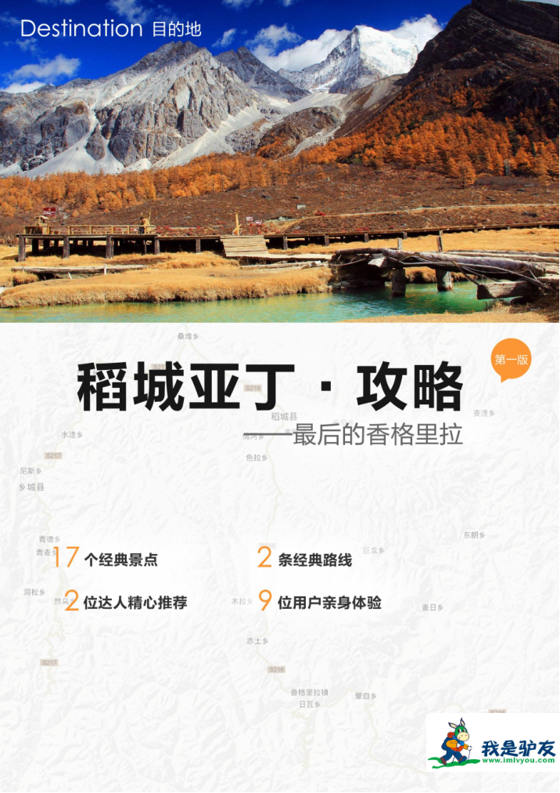
样本量：243，平均评分：4.8
平均消费：321.06 元，平均门票：146.0 元，平均停留：4.66 小时
高频季节：夏季(67) / 春季(65)
高频交通：高铁+大巴(31) / 飞机+大巴(28) / 空调大巴(26)
游客来源：海南省(14) / 云南省(12) / 西藏自治区(11) / 安徽省(11) / 天津市(10)
素材：稻城亚丁
样本量：243，平均评分：4.77
平均消费：324.06 元，平均门票：138.0 元，平均停留：4.66 小时
高频季节：冬季(71) / 春季(67)
高频交通：高铁+大巴(25) / 飞机+大巴(20) / 空调大巴(19)
游客来源：贵州省(14) / 青海省(13) / 广东省(12) / 北京市(12) / 浙江省(12)
素材：未匹配
样本量：243，平均评分：4.76
平均消费：192.96 元，平均门票：0.0 元，平均停留：4.4 小时
高频季节：夏季(66) / 春季(64)
高频交通：高铁+大巴(33) / 空调大巴(27) / 飞机+大巴(18)
游客来源：河北省(13) / 海南省(11) / 上海市(11) / 陕西省(11) / 西藏自治区(10)
素材：未匹配
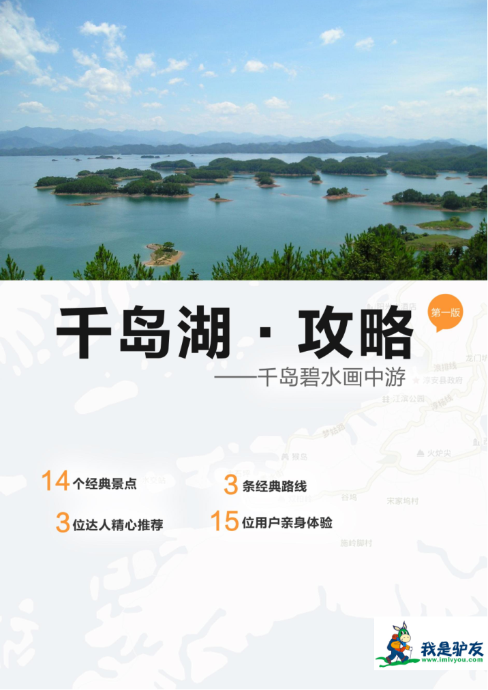
样本量：243，平均评分：4.71
平均消费：300.14 元，平均门票：130.0 元，平均停留：4.34 小时
高频季节：春季(75) / 冬季(59)
高频交通：飞机+大巴(28) / 空调大巴(26) / 高铁+大巴(20)
游客来源：湖南省(13) / 黑龙江省(12) / 湖北省(11) / 山东省(11) / 四川省(10)
素材：千岛湖
样本量：243，平均评分：4.69
平均消费：343.4 元，平均门票：165.0 元，平均停留：4.83 小时
高频季节：春季(68) / 秋季(65)
高频交通：飞机+大巴(30) / 高铁+大巴(19) / 空调大巴(16)
游客来源：澳门特别行政区(13) / 上海市(12) / 台湾省(12) / 海南省(11) / 新疆维吾尔自治区(10)
素材：未匹配

样本量：243，平均评分：4.39
平均消费：326.51 元，平均门票：160.0 元，平均停留：4.37 小时
高频季节：秋季(69) / 夏季(68)
高频交通：高铁+大巴(26) / 飞机+大巴(19) / 空调大巴(14)
游客来源：浙江省(12) / 湖南省(11) / 上海市(10) / 云南省(10) / 河南省(10)
素材：华山
样本量：243，平均评分：4.29
平均消费：247.48 元，平均门票：75.0 元，平均停留：4.57 小时
高频季节：春季(67) / 夏季(67)
高频交通：空调大巴(26) / 高铁+大巴(25) / 飞机+大巴(17)
游客来源：海南省(13) / 广东省(13) / 香港特别行政区(12) / 福建省(12) / 甘肃省(10)
素材：未匹配
样本量：242，平均评分：4.76
平均消费：284.21 元，平均门票：105.0 元，平均停留：4.54 小时
高频季节：冬季(71) / 夏季(64)
高频交通：高铁+大巴(28) / 飞机+大巴(26) / 空调大巴(22)
游客来源：河南省(13) / 广西壮族自治区(11) / 内蒙古自治区(11) / 江苏省(11) / 西藏自治区(10)
素材：未匹配
样本量：242，平均评分：4.69
平均消费：257.81 元，平均门票：70.0 元，平均停留：4.44 小时
高频季节：秋季(68) / 春季(61)
高频交通：空调大巴(28) / 飞机+大巴(26) / 高铁+大巴(22)
游客来源：重庆市(13) / 江西省(13) / 河南省(11) / 台湾省(11) / 吉林省(11)
素材：未匹配
样本量：242，平均评分：4.67
平均消费：288.44 元，平均门票：100.0 元，平均停留：4.64 小时
高频季节：冬季(64) / 春季(61)
高频交通：高铁+大巴(27) / 空调大巴(22) / 飞机+大巴(20)
游客来源：广东省(13) / 辽宁省(12) / 陕西省(11) / 内蒙古自治区(10) / 海南省(10)
素材：洛阳
样本量：242，平均评分：4.62
平均消费：223.12 元，平均门票：70.0 元，平均停留：4.42 小时
高频季节：夏季(73) / 春季(64)
高频交通：高铁+大巴(24) / 飞机+大巴(18) / 空调大巴(14)
游客来源：福建省(12) / 内蒙古自治区(12) / 山西省(11) / 安徽省(10) / 浙江省(9)
素材：未匹配
样本量：242，平均评分：4.59
平均消费：248.76 元，平均门票：80.0 元，平均停留：4.5 小时
高频季节：秋季(67) / 冬季(62)
高频交通：高铁+大巴(32) / 飞机+大巴(27) / 空调大巴(20)
游客来源：上海市(12) / 西藏自治区(11) / 广东省(10) / 青海省(10) / 吉林省(9)
素材：未匹配
样本量：242，平均评分：4.58
平均消费：268.67 元，平均门票：80.0 元，平均停留：4.62 小时
高频季节：春季(66) / 夏季(63)
高频交通：高铁+大巴(30) / 空调大巴(29) / 飞机+大巴(25)
游客来源：陕西省(10) / 西藏自治区(10) / 新疆维吾尔自治区(10) / 上海市(9) / 吉林省(9)
素材：未匹配
样本量：242，平均评分：4.39
平均消费：263.66 元，平均门票：96.0 元，平均停留：4.27 小时
高频季节：夏季(71) / 秋季(61)
高频交通：空调大巴(26) / 高铁+大巴(22) / 飞机+大巴(21)
游客来源：内蒙古自治区(14) / 四川省(12) / 重庆市(11) / 北京市(10) / 福建省(10)
素材：未匹配
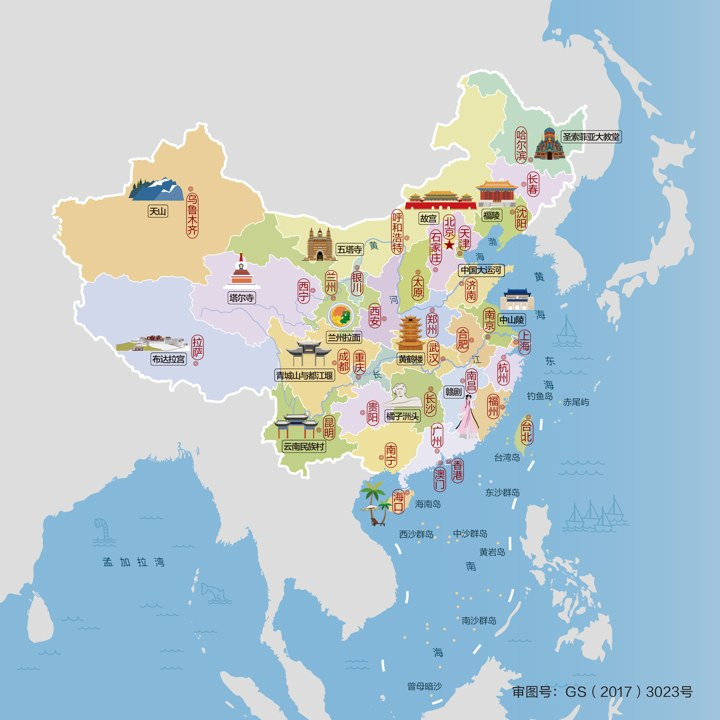
样本量：242，平均评分：4.37
平均消费：201.32 元，平均门票：30.0 元，平均停留：4.42 小时
高频季节：秋季(70) / 夏季(64)
高频交通：空调大巴(27) / 飞机+大巴(26) / 高铁+大巴(16)
游客来源：山西省(15) / 内蒙古自治区(12) / 香港特别行政区(11) / 辽宁省(11) / 贵州省(10)
素材：中国
样本量：242，平均评分：4.37
平均消费：233.17 元，平均门票：65.0 元，平均停留：4.29 小时
高频季节：冬季(66) / 秋季(65)
高频交通：飞机+大巴(28) / 空调大巴(24) / 高铁+大巴(19)
游客来源：甘肃省(14) / 安徽省(13) / 广东省(13) / 天津市(12) / 湖南省(12)
素材：未匹配
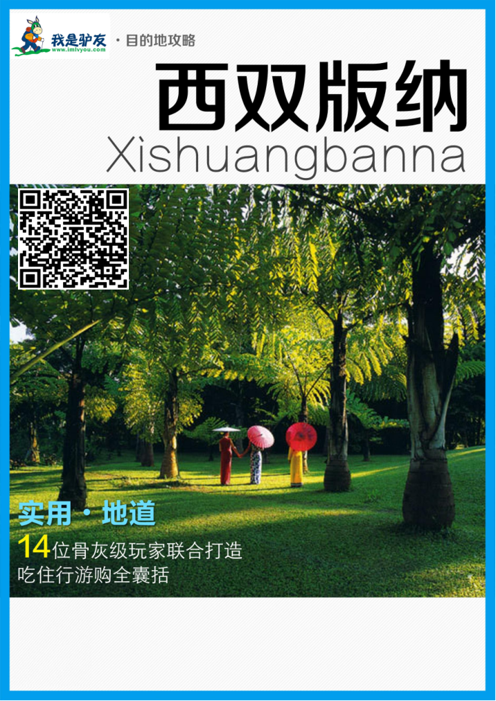
样本量：242，平均评分：4.29
平均消费：234.11 元，平均门票：60.0 元，平均停留：4.57 小时
高频季节：夏季(67) / 冬季(64)
高频交通：高铁+大巴(24) / 飞机+大巴(24) / 空调大巴(19)
游客来源：广东省(12) / 甘肃省(12) / 台湾省(10) / 湖南省(10) / 江西省(10)
素材：西双版纳
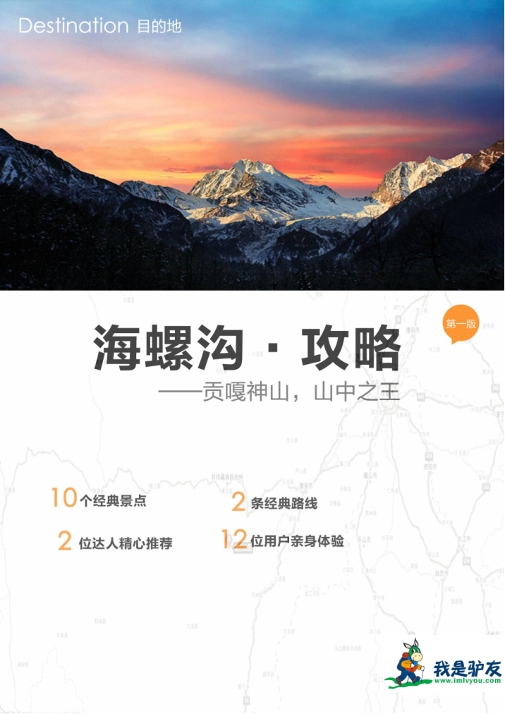
样本量：241，平均评分：4.88
平均消费：282.52 元，平均门票：90.0 元，平均停留：4.45 小时
高频季节：夏季(71) / 春季(66)
高频交通：飞机+大巴(38) / 高铁+大巴(25) / 空调大巴(24)
游客来源：河南省(14) / 山东省(12) / 台湾省(12) / 浙江省(11) / 广东省(10)
素材：海螺沟
样本量：241，平均评分：4.52
平均消费：215.82 元，平均门票：40.0 元，平均停留：4.44 小时
高频季节：秋季(65) / 冬季(65)
高频交通：空调大巴(23) / 高铁+大巴(20) / 飞机+大巴(19)
游客来源：河南省(15) / 内蒙古自治区(12) / 江西省(11) / 浙江省(11) / 西藏自治区(10)
素材：未匹配
样本量：241，平均评分：4.5
平均消费：160.61 元，平均门票：0.0 元，平均停留：4.41 小时
高频季节：冬季(68) / 夏季(62)
高频交通：飞机+大巴(29) / 高铁+大巴(21) / 空调大巴(17)
游客来源：安徽省(13) / 澳门特别行政区(11) / 四川省(11) / 重庆市(11) / 天津市(10)
素材：未匹配

样本量：241，平均评分：4.38
平均消费：279.53 元，平均门票：125.0 元，平均停留：4.54 小时
高频季节：夏季(68) / 春季(61)
高频交通：高铁+大巴(29) / 飞机+大巴(22) / 空调大巴(20)
游客来源：四川省(15) / 福建省(12) / 重庆市(11) / 安徽省(10) / 广东省(10)
素材：平遥
样本量：241，平均评分：4.31
平均消费：177.34 元，平均门票：0.0 元，平均停留：4.71 小时
高频季节：秋季(70) / 冬季(58)
高频交通：高铁+大巴(29) / 飞机+大巴(28) / 空调大巴(25)
游客来源：江苏省(14) / 广东省(12) / 台湾省(12) / 宁夏回族自治区(11) / 山西省(11)
素材：未匹配
样本量：241，平均评分：4.2
平均消费：188.4 元，平均门票：20.0 元，平均停留：4.52 小时
高频季节：夏季(66) / 春季(61)
高频交通：空调大巴(27) / 高铁+大巴(24) / 飞机+大巴(18)
游客来源：河南省(13) / 福建省(11) / 河北省(10) / 贵州省(10) / 山东省(9)
素材：哈尔滨旅游攻略
样本量：241，平均评分：4.06
平均消费：189.93 元，平均门票：0.0 元，平均停留：4.67 小时
高频季节：春季(64) / 冬季(62)
高频交通：飞机+大巴(28) / 高铁+大巴(26) / 空调大巴(23)
游客来源：河南省(13) / 云南省(11) / 湖北省(11) / 浙江省(10) / 四川省(10)
素材：未匹配
样本量：240，平均评分：4.68
平均消费：253.62 元，平均门票：80.0 元，平均停留：4.5 小时
高频季节：冬季(64) / 秋季(60)
高频交通：飞机+大巴(32) / 高铁+大巴(32) / 空调大巴(15)
游客来源：甘肃省(12) / 辽宁省(12) / 北京市(11) / 安徽省(11) / 江西省(11)
素材：武汉
样本量：240，平均评分：4.58
平均消费：356.09 元，平均门票：190.0 元，平均停留：4.52 小时
高频季节：春季(67) / 冬季(64)
高频交通：空调大巴(27) / 高铁+大巴(20) / 飞机+大巴(19)
游客来源：澳门特别行政区(15) / 安徽省(12) / 四川省(11) / 河北省(11) / 浙江省(10)
素材：桂林旅游攻略
样本量：240，平均评分：4.57
平均消费：230.16 元，平均门票：60.0 元，平均停留：4.55 小时
高频季节：冬季(65) / 夏季(64)
高频交通：高铁+大巴(24) / 飞机+大巴(23) / 空调大巴(19)
游客来源：福建省(14) / 香港特别行政区(14) / 新疆维吾尔自治区(12) / 河南省(12) / 广西壮族自治区(12)
素材：未匹配

样本量：240，平均评分：4.48
平均消费：149.49 元，平均门票：0.0 元，平均停留：4.37 小时
高频季节：秋季(66) / 冬季(64)
高频交通：飞机+大巴(36) / 高铁+大巴(21) / 空调大巴(21)
游客来源：福建省(11) / 江西省(11) / 香港特别行政区(11) / 广东省(10) / 河南省(10)
素材：苏州旅游攻略
样本量：240，平均评分：4.43
平均消费：271.28 元，平均门票：100.0 元，平均停留：4.53 小时
高频季节：夏季(67) / 秋季(59)
高频交通：空调大巴(29) / 高铁+大巴(22) / 飞机+大巴(21)
游客来源：内蒙古自治区(12) / 北京市(11) / 澳门特别行政区(10) / 香港特别行政区(10) / 黑龙江省(10)
素材：未匹配

样本量：240，平均评分：4.34
平均消费：270.6 元，平均门票：100.0 元，平均停留：4.68 小时
高频季节：冬季(69) / 春季(61)
高频交通：飞机+大巴(26) / 空调大巴(25) / 高铁+大巴(21)
游客来源：辽宁省(12) / 安徽省(12) / 福建省(11) / 河南省(11) / 上海市(11)
素材：同里旅游攻略

样本量：240，平均评分：4.32
平均消费：199.08 元，平均门票：30.0 元，平均停留：4.35 小时
高频季节：夏季(66) / 秋季(64)
高频交通：空调大巴(25) / 高铁+大巴(24) / 飞机+大巴(14)
游客来源：福建省(11) / 山东省(10) / 辽宁省(10) / 陕西省(10) / 上海市(10)
素材：宁波攻略
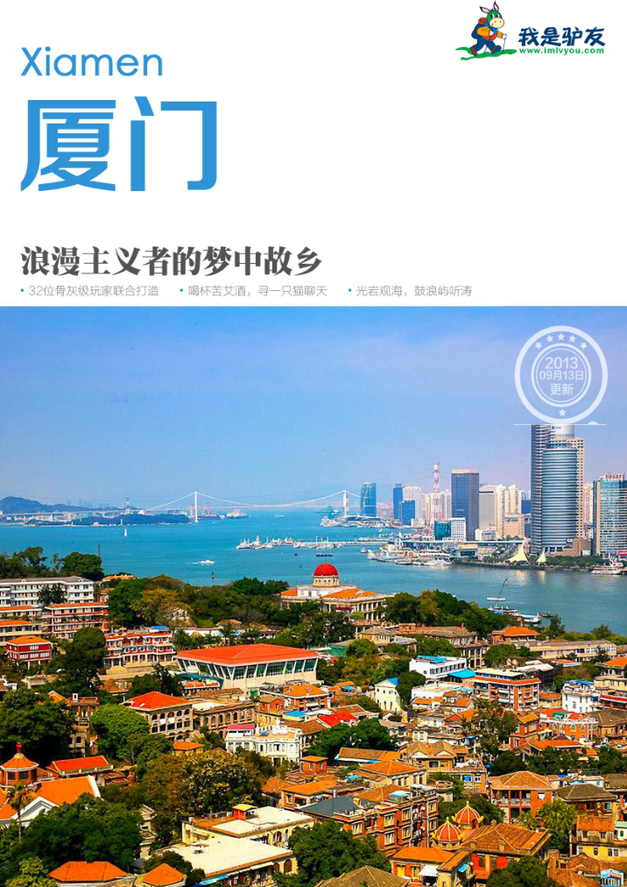
样本量：240，平均评分：4.2
平均消费：212.61 元，平均门票：40.0 元，平均停留：4.55 小时
高频季节：冬季(63) / 春季(62)
高频交通：飞机+大巴(24) / 高铁+大巴(23) / 空调大巴(18)
游客来源：江苏省(13) / 海南省(12) / 河南省(11) / 浙江省(11) / 上海市(11)
素材：厦门旅游攻略
样本量：240，平均评分：4.11
平均消费：247.72 元，平均门票：60.0 元，平均停留：4.55 小时
高频季节：冬季(65) / 春季(62)
高频交通：飞机+大巴(28) / 空调大巴(24) / 高铁+大巴(14)
游客来源：贵州省(12) / 江苏省(11) / 海南省(10) / 香港特别行政区(10) / 湖南省(10)
素材：成都攻略
样本量：239，平均评分：4.59
平均消费：272.83 元，平均门票：108.0 元，平均停留：4.45 小时
高频季节：秋季(70) / 春季(64)
高频交通：飞机+大巴(27) / 高铁+大巴(22) / 空调大巴(18)
游客来源：上海市(14) / 西藏自治区(12) / 宁夏回族自治区(11) / 天津市(10) / 陕西省(10)
素材：未匹配
样本量：239，平均评分：4.49
平均消费：240.24 元，平均门票：80.0 元，平均停留：4.5 小时
高频季节：冬季(76) / 春季(68)
高频交通：飞机+大巴(28) / 空调大巴(21) / 高铁+大巴(21)
游客来源：甘肃省(12) / 陕西省(12) / 吉林省(11) / 海南省(10) / 广西壮族自治区(10)
素材：苏州旅游攻略
样本量：239，平均评分：4.44
平均消费：267.96 元，平均门票：90.0 元，平均停留：4.73 小时
高频季节：秋季(66) / 冬季(60)
高频交通：高铁+大巴(35) / 飞机+大巴(21) / 空调大巴(21)
游客来源：江苏省(12) / 西藏自治区(11) / 黑龙江省(11) / 贵州省(10) / 上海市(9)
素材：无锡旅游攻略
样本量：239，平均评分：4.25
平均消费：267.19 元，平均门票：100.0 元，平均停留：4.54 小时
高频季节：春季(66) / 冬季(64)
高频交通：飞机+大巴(31) / 高铁+大巴(25) / 空调大巴(21)
游客来源：四川省(13) / 上海市(12) / 西藏自治区(11) / 台湾省(11) / 江西省(10)
素材：未匹配
样本量：239，平均评分：4.21
平均消费：178.85 元，平均门票：0.0 元，平均停留：4.45 小时
高频季节：冬季(74) / 夏季(60)
高频交通：高铁+大巴(33) / 飞机+大巴(23) / 空调大巴(21)
游客来源：天津市(19) / 澳门特别行政区(11) / 内蒙古自治区(11) / 山西省(10) / 台湾省(10)
素材：大理
样本量：239，平均评分：4.13
平均消费：178.04 元，平均门票：0.0 元，平均停留：4.42 小时
高频季节：夏季(64) / 冬季(63)
高频交通：空调大巴(31) / 高铁+大巴(27) / 飞机+大巴(22)
游客来源：河南省(12) / 台湾省(10) / 广西壮族自治区(10) / 北京市(10) / 辽宁省(10)
素材：未匹配
样本量：239，平均评分：4.11
平均消费：215.45 元，平均门票：50.0 元，平均停留：4.32 小时
高频季节：秋季(65) / 夏季(60)
高频交通：高铁+大巴(27) / 空调大巴(24) / 飞机+大巴(21)
游客来源：北京市(13) / 浙江省(12) / 黑龙江省(11) / 海南省(11) / 内蒙古自治区(10)
素材：西安
样本量：239，平均评分：4.1
平均消费：173.42 元，平均门票：0.0 元，平均停留：4.57 小时
高频季节：夏季(64) / 秋季(62)
高频交通：飞机+大巴(29) / 高铁+大巴(23) / 空调大巴(21)
游客来源：湖南省(15) / 湖北省(12) / 澳门特别行政区(12) / 江西省(12) / 安徽省(11)
素材：桂林旅游攻略
样本量：239，平均评分：4.08
平均消费：161.63 元，平均门票：0.0 元，平均停留：4.62 小时
高频季节：冬季(76) / 秋季(62)
高频交通：高铁+大巴(31) / 飞机+大巴(26) / 空调大巴(20)
游客来源：台湾省(11) / 甘肃省(10) / 西藏自治区(10) / 广东省(10) / 天津市(10)
素材：三亚旅游攻略
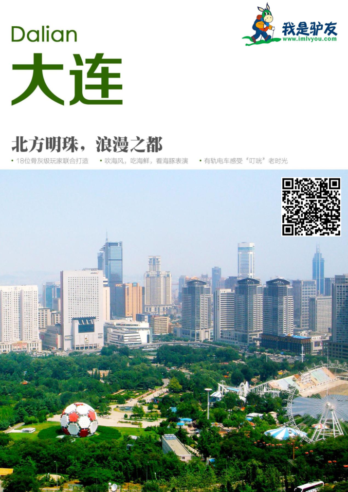
样本量：239，平均评分：3.97
平均消费：281.69 元，平均门票：120.0 元，平均停留：4.57 小时
高频季节：秋季(65) / 春季(60)
高频交通：空调大巴(28) / 高铁+大巴(28) / 飞机+大巴(25)
游客来源：四川省(12) / 香港特别行政区(11) / 台湾省(10) / 贵州省(10) / 辽宁省(10)
素材：大连旅游攻略
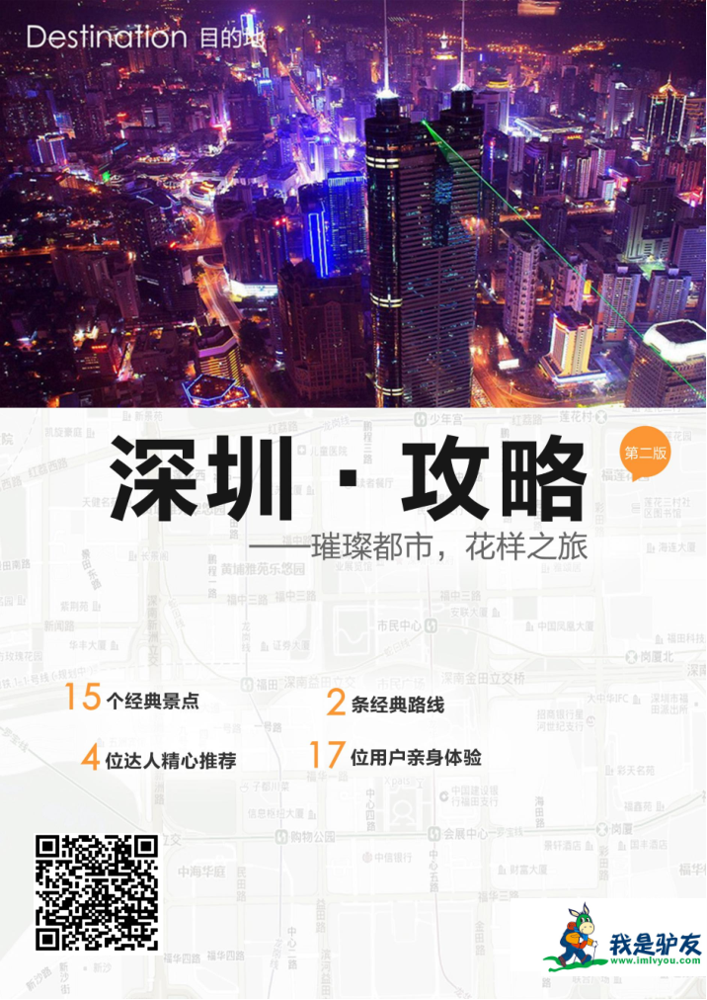
样本量：238，平均评分：4.68
平均消费：397.68 元，平均门票：220.0 元，平均停留：4.54 小时
高频季节：秋季(69) / 夏季(67)
高频交通：高铁+大巴(27) / 空调大巴(21) / 飞机+大巴(19)
游客来源：北京市(12) / 湖北省(12) / 海南省(12) / 河南省(11) / 山东省(11)
素材：深圳旅游攻略
样本量：238，平均评分：4.57
平均消费：257.15 元，平均门票：65.0 元，平均停留：4.59 小时
高频季节：秋季(72) / 春季(65)
高频交通：空调大巴(25) / 高铁+大巴(21) / 飞机+大巴(20)
游客来源：湖北省(13) / 海南省(12) / 内蒙古自治区(12) / 安徽省(11) / 香港特别行政区(10)
素材：未匹配
样本量：238，平均评分：4.53
平均消费：186.79 元，平均门票：0.0 元，平均停留：4.47 小时
高频季节：春季(65) / 秋季(60)
高频交通：高铁+大巴(29) / 空调大巴(28) / 飞机+大巴(24)
游客来源：广东省(13) / 湖北省(11) / 河南省(11) / 云南省(10) / 吉林省(10)
素材：北海旅游攻略
样本量：238，平均评分：4.5
平均消费：236.59 元，平均门票：60.0 元，平均停留：4.4 小时
高频季节：秋季(76) / 春季(55)
高频交通：高铁+大巴(29) / 飞机+大巴(24) / 空调大巴(23)
游客来源：河北省(14) / 广东省(11) / 山西省(10) / 甘肃省(10) / 福建省(9)
素材：未匹配
样本量：238，平均评分：4.42
平均消费：304.22 元，平均门票：130.0 元，平均停留：4.55 小时
高频季节：冬季(79) / 秋季(59)
高频交通：空调大巴(22) / 飞机+大巴(20) / 高铁+大巴(18)
游客来源：广东省(12) / 台湾省(10) / 天津市(10) / 香港特别行政区(10) / 江苏省(9)
素材：未匹配
样本量：238，平均评分：4.4
平均消费：214.23 元，平均门票：40.0 元，平均停留：4.58 小时
高频季节：冬季(66) / 夏季(66)
高频交通：高铁+大巴(28) / 空调大巴(23) / 飞机+大巴(20)
游客来源：广东省(15) / 天津市(13) / 西藏自治区(12) / 安徽省(10) / 北京市(9)
素材：上海旅游攻略

样本量：238，平均评分：4.39
平均消费：297.37 元，平均门票：120.0 元，平均停留：4.34 小时
高频季节：冬季(69) / 春季(66)
高频交通：飞机+大巴(27) / 高铁+大巴(26) / 空调大巴(20)
游客来源：上海市(11) / 河南省(11) / 湖南省(11) / 安徽省(10) / 四川省(10)
素材：三清山
样本量：238，平均评分：4.39
平均消费：183.53 元，平均门票：10.0 元，平均停留：4.46 小时
高频季节：夏季(62) / 春季(61)
高频交通：空调大巴(29) / 高铁+大巴(25) / 飞机+大巴(21)
游客来源：广东省(12) / 河南省(12) / 天津市(11) / 甘肃省(11) / 上海市(9)
素材：广州旅游攻略
样本量：238，平均评分：4.23
平均消费：218.03 元，平均门票：0.0 元，平均停留：4.16 小时
高频季节：冬季(69) / 夏季(61)
高频交通：高铁+大巴(31) / 空调大巴(25) / 飞机+大巴(21)
游客来源：甘肃省(14) / 天津市(12) / 澳门特别行政区(11) / 山东省(11) / 宁夏回族自治区(11)
素材：未匹配
样本量：237，平均评分：4.65
平均消费：251.05 元，平均门票：70.0 元，平均停留：4.54 小时
高频季节：秋季(63) / 夏季(62)
高频交通：空调大巴(27) / 飞机+大巴(22) / 高铁+大巴(18)
游客来源：浙江省(14) / 江苏省(12) / 山西省(11) / 陕西省(11) / 天津市(10)
素材：未匹配
样本量：237，平均评分：4.6
平均消费：316.69 元，平均门票：150.0 元，平均停留：4.42 小时
高频季节：夏季(75) / 秋季(58)
高频交通：飞机+大巴(25) / 空调大巴(22) / 高铁+大巴(18)
游客来源：江苏省(16) / 内蒙古自治区(12) / 香港特别行政区(11) / 台湾省(11) / 海南省(10)
素材：未匹配
样本量：237，平均评分：4.58
平均消费：185.87 元，平均门票：0.0 元，平均停留：4.43 小时
高频季节：秋季(64) / 冬季(61)
高频交通：飞机+大巴(31) / 空调大巴(25) / 高铁+大巴(14)
游客来源：山东省(12) / 四川省(12) / 山西省(12) / 西藏自治区(10) / 辽宁省(9)
素材：未匹配

样本量：237，平均评分：4.51
平均消费：274.45 元，平均门票：90.0 元，平均停留：4.49 小时
高频季节：春季(65) / 冬季(62)
高频交通：高铁+大巴(25) / 空调大巴(24) / 飞机+大巴(22)
游客来源：贵州省(12) / 广东省(11) / 河北省(10) / 福建省(10) / 澳门特别行政区(9)
素材：青城山
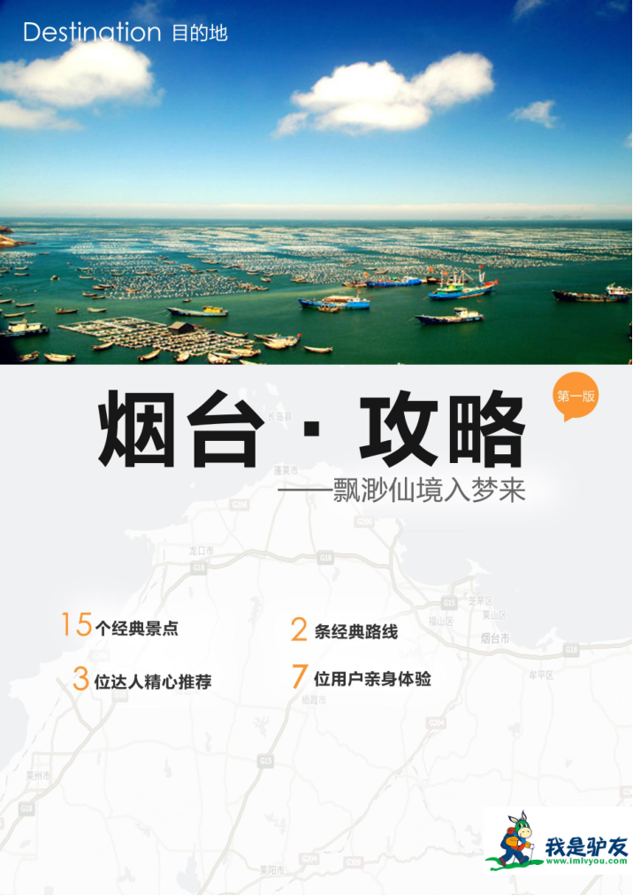
样本量：237，平均评分：4.42
平均消费：237.3 元，平均门票：50.0 元，平均停留：4.51 小时
高频季节：春季(62) / 秋季(61)
高频交通：高铁+大巴(27) / 空调大巴(26) / 飞机+大巴(16)
游客来源：河南省(12) / 天津市(12) / 安徽省(12) / 江苏省(11) / 河北省(10)
素材：烟台旅游攻略.1
样本量：237，平均评分：4.38
平均消费：273.2 元，平均门票：90.0 元，平均停留：4.63 小时
高频季节：夏季(71) / 秋季(58)
高频交通：高铁+大巴(26) / 空调大巴(21) / 飞机+大巴(19)
游客来源：湖南省(11) / 海南省(10) / 吉林省(10) / 江西省(10) / 台湾省(9)
素材：未匹配
样本量：237，平均评分：4.09
平均消费：188.04 元，平均门票：10.0 元，平均停留：4.56 小时
高频季节：冬季(71) / 秋季(61)
高频交通：高铁+大巴(29) / 飞机+大巴(25) / 空调大巴(19)
游客来源：湖南省(11) / 内蒙古自治区(10) / 香港特别行政区(10) / 山西省(10) / 甘肃省(10)
素材：上海旅游攻略

样本量：237，平均评分：4.01
平均消费：292.76 元，平均门票：125.0 元，平均停留：4.53 小时
高频季节：夏季(72) / 春季(62)
高频交通：高铁+大巴(29) / 空调大巴(26) / 飞机+大巴(21)
游客来源：天津市(12) / 重庆市(12) / 北京市(11) / 山西省(11) / 广西壮族自治区(11)
素材：大同
样本量：236，平均评分：4.78
平均消费：241.04 元，平均门票：50.0 元，平均停留：4.6 小时
高频季节：冬季(64) / 秋季(61)
高频交通：飞机+大巴(32) / 空调大巴(23) / 高铁+大巴(16)
游客来源：浙江省(11) / 广东省(10) / 青海省(10) / 内蒙古自治区(9) / 河南省(9)
素材：未匹配
样本量：236，平均评分：4.71
平均消费：250.71 元，平均门票：55.0 元，平均停留：4.5 小时
高频季节：秋季(64) / 冬季(61)
高频交通：空调大巴(24) / 高铁+大巴(21) / 飞机+大巴(16)
游客来源：西藏自治区(14) / 山东省(10) / 四川省(10) / 甘肃省(10) / 上海市(10)
素材：未匹配
样本量：236，平均评分：4.59
平均消费：186.86 元，平均门票：30.0 元，平均停留：4.43 小时
高频季节：春季(67) / 秋季(60)
高频交通：飞机+大巴(33) / 高铁+大巴(22) / 空调大巴(17)
游客来源：澳门特别行政区(13) / 河北省(13) / 黑龙江省(10) / 福建省(10) / 甘肃省(9)
素材：未匹配
样本量：236，平均评分：4.54
平均消费：343.27 元，平均门票：180.0 元，平均停留：4.69 小时
高频季节：夏季(68) / 秋季(61)
高频交通：空调大巴(29) / 高铁+大巴(25) / 飞机+大巴(23)
游客来源：河北省(12) / 甘肃省(10) / 海南省(10) / 内蒙古自治区(9) / 江西省(9)
素材：上海旅游攻略

样本量：236，平均评分：4.48
平均消费：444.99 元，平均门票：258.0 元，平均停留：4.52 小时
高频季节：秋季(65) / 春季(64)
高频交通：高铁+大巴(23) / 飞机+大巴(22) / 空调大巴(21)
游客来源：河南省(12) / 辽宁省(10) / 重庆市(10) / 山东省(9) / 河北省(9)
素材：张家界
样本量：236，平均评分：4.41
平均消费：458.63 元，平均门票：299.0 元，平均停留：4.63 小时
高频季节：夏季(64) / 春季(61)
高频交通：高铁+大巴(24) / 飞机+大巴(21) / 空调大巴(18)
游客来源：福建省(11) / 湖北省(10) / 海南省(10) / 广西壮族自治区(10) / 甘肃省(9)
素材：北京
样本量：236，平均评分：4.41
平均消费：216.62 元，平均门票：50.0 元，平均停留：4.55 小时
高频季节：春季(62) / 夏季(61)
高频交通：空调大巴(25) / 飞机+大巴(23) / 高铁+大巴(22)
游客来源：重庆市(15) / 湖南省(14) / 西藏自治区(11) / 江西省(11) / 云南省(10)
素材：未匹配
样本量：236，平均评分：4.41
平均消费：328.1 元，平均门票：170.0 元，平均停留：4.49 小时
高频季节：夏季(68) / 秋季(60)
高频交通：高铁+大巴(32) / 空调大巴(30) / 飞机+大巴(19)
游客来源：安徽省(13) / 甘肃省(12) / 四川省(12) / 广东省(11) / 河南省(11)
素材：未匹配
样本量：236，平均评分：4.31
平均消费：206.04 元，平均门票：30.0 元，平均停留：4.47 小时
高频季节：夏季(67) / 秋季(66)
高频交通：高铁+大巴(27) / 飞机+大巴(25) / 空调大巴(25)
游客来源：云南省(14) / 山西省(11) / 安徽省(11) / 宁夏回族自治区(10) / 广东省(10)
素材：未匹配
样本量：236，平均评分：4.3
平均消费：246.26 元，平均门票：70.0 元，平均停留：4.64 小时
高频季节：春季(67) / 夏季(63)
高频交通：空调大巴(28) / 高铁+大巴(23) / 飞机+大巴(15)
游客来源：湖南省(12) / 内蒙古自治区(12) / 浙江省(11) / 辽宁省(10) / 湖北省(9)
素材：未匹配
样本量：236，平均评分：4.3
平均消费：223.07 元，平均门票：50.0 元，平均停留：4.48 小时
高频季节：秋季(68) / 冬季(59)
高频交通：高铁+大巴(25) / 飞机+大巴(24) / 空调大巴(23)
游客来源：宁夏回族自治区(13) / 甘肃省(12) / 北京市(11) / 黑龙江省(10) / 江西省(9)
素材：未匹配
样本量：236，平均评分：4.21
平均消费：171.78 元，平均门票：0.0 元，平均停留：4.46 小时
高频季节：秋季(64) / 春季(63)
高频交通：飞机+大巴(29) / 高铁+大巴(28) / 空调大巴(14)
游客来源：天津市(12) / 澳门特别行政区(11) / 香港特别行政区(11) / 辽宁省(11) / 江苏省(10)
素材：上海旅游攻略
样本量：236，平均评分：4.1
平均消费：177.99 元，平均门票：0.0 元，平均停留：4.54 小时
高频季节：夏季(60) / 春季(59)
高频交通：飞机+大巴(25) / 高铁+大巴(25) / 空调大巴(18)
游客来源：山西省(15) / 浙江省(12) / 云南省(12) / 安徽省(10) / 甘肃省(10)
素材：未匹配
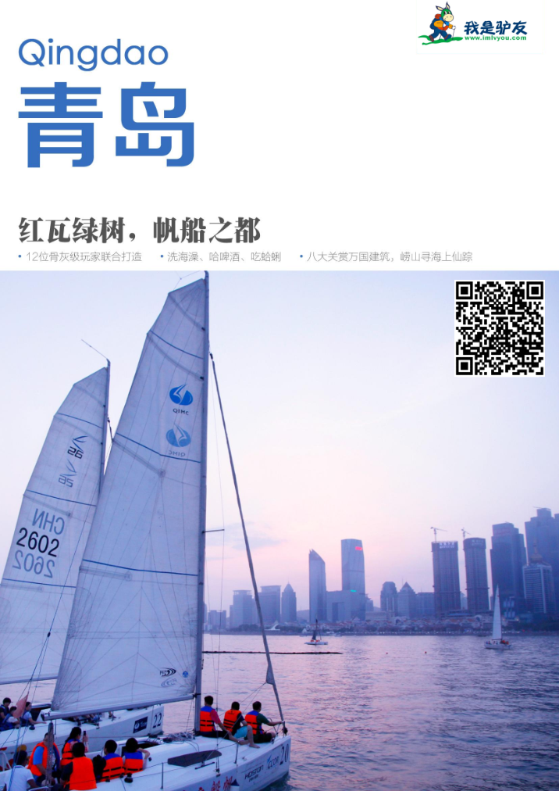
样本量：235，平均评分：4.84
平均消费：276.69 元，平均门票：90.0 元，平均停留：4.53 小时
高频季节：秋季(72) / 夏季(59)
高频交通：飞机+大巴(25) / 高铁+大巴(21) / 空调大巴(18)
游客来源：海南省(14) / 重庆市(12) / 江苏省(11) / 香港特别行政区(10) / 广西壮族自治区(10)
素材：青岛旅游攻略
样本量：235，平均评分：4.77
平均消费：183.08 元，平均门票：5.0 元，平均停留：4.56 小时
高频季节：夏季(62) / 冬季(59)
高频交通：高铁+大巴(27) / 空调大巴(23) / 飞机+大巴(20)
游客来源：广东省(13) / 青海省(12) / 湖南省(11) / 海南省(11) / 四川省(10)
素材：广州旅游攻略
样本量：235，平均评分：4.75
平均消费：303.9 元，平均门票：120.0 元，平均停留：4.49 小时
高频季节：秋季(63) / 夏季(63)
高频交通：飞机+大巴(25) / 高铁+大巴(23) / 空调大巴(23)
游客来源：安徽省(12) / 山东省(12) / 澳门特别行政区(12) / 广西壮族自治区(10) / 甘肃省(10)
素材：大连旅游攻略
样本量：235，平均评分：4.74
平均消费：277.78 元，平均门票：100.0 元，平均停留：4.78 小时
高频季节：春季(64) / 冬季(57)
高频交通：飞机+大巴(33) / 空调大巴(25) / 高铁+大巴(13)
游客来源：浙江省(12) / 上海市(12) / 重庆市(11) / 安徽省(11) / 广东省(11)
素材：昆明
样本量：235，平均评分：4.57
平均消费：295.26 元，平均门票：120.0 元，平均停留：4.29 小时
高频季节：秋季(65) / 春季(60)
高频交通：高铁+大巴(26) / 空调大巴(25) / 飞机+大巴(19)
游客来源：上海市(12) / 河南省(10) / 四川省(10) / 安徽省(10) / 台湾省(9)
素材：未匹配
样本量：235，平均评分：4.52
平均消费：147.1 元，平均门票：0.0 元，平均停留：4.5 小时
高频季节：冬季(76) / 夏季(59)
高频交通：空调大巴(21) / 高铁+大巴(21) / 飞机+大巴(19)
游客来源：海南省(14) / 云南省(13) / 宁夏回族自治区(12) / 贵州省(11) / 天津市(10)
素材：长沙
样本量：235，平均评分：4.43
平均消费：246.38 元，平均门票：60.0 元，平均停留：4.63 小时
高频季节：夏季(70) / 春季(59)
高频交通：空调大巴(24) / 飞机+大巴(24) / 高铁+大巴(24)
游客来源：香港特别行政区(13) / 湖北省(11) / 江西省(11) / 安徽省(11) / 广西壮族自治区(10)
素材：长白山旅游攻略
样本量：235，平均评分：4.39
平均消费：230.3 元，平均门票：60.0 元，平均停留：4.74 小时
高频季节：夏季(64) / 春季(60)
高频交通：空调大巴(27) / 高铁+大巴(23) / 飞机+大巴(22)
游客来源：浙江省(13) / 福建省(12) / 湖南省(12) / 青海省(12) / 甘肃省(12)
素材：故宫
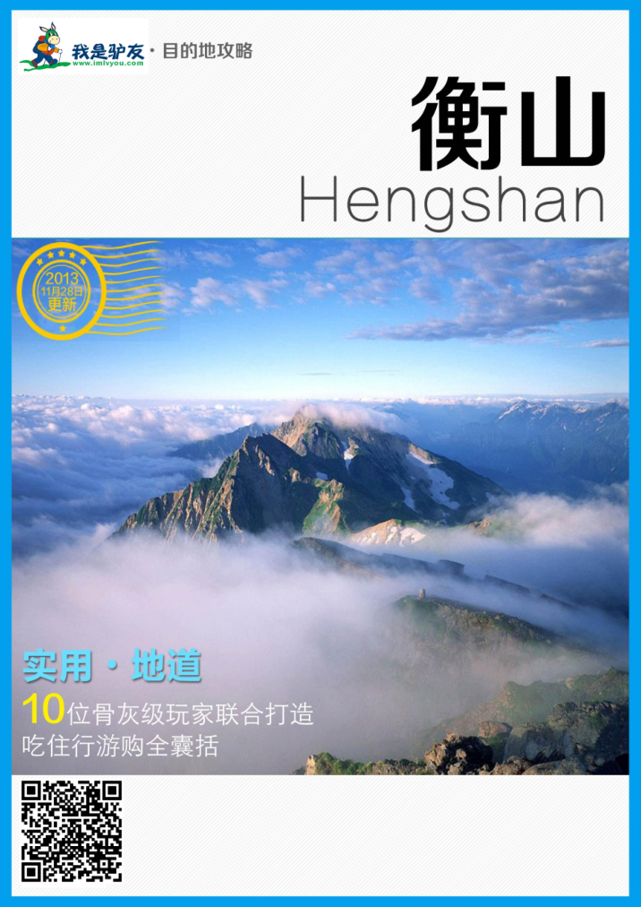
样本量：235，平均评分：4.3
平均消费：287.5 元，平均门票：110.0 元，平均停留：4.5 小时
高频季节：秋季(63) / 夏季(62)
高频交通：空调大巴(31) / 飞机+大巴(20) / 高铁+大巴(16)
游客来源：陕西省(11) / 湖南省(11) / 辽宁省(10) / 上海市(10) / 福建省(10)
素材：衡山
样本量：235，平均评分：4.3
平均消费：177.64 元，平均门票：0.0 元，平均停留：4.35 小时
高频季节：夏季(65) / 冬季(59)
高频交通：飞机+大巴(24) / 高铁+大巴(21) / 空调大巴(20)
游客来源：浙江省(13) / 河北省(12) / 青海省(12) / 山西省(11) / 湖南省(10)
素材：青岛旅游攻略
样本量：235，平均评分：4.29
平均消费：227.32 元，平均门票：50.0 元，平均停留：4.48 小时
高频季节：冬季(67) / 夏季(60)
高频交通：高铁+大巴(28) / 空调大巴(20) / 飞机+大巴(18)
游客来源：江苏省(14) / 青海省(12) / 四川省(11) / 湖南省(11) / 云南省(11)
素材：未匹配
样本量：235，平均评分：4.22
平均消费：221.92 元，平均门票：50.0 元，平均停留：4.66 小时
高频季节：夏季(70) / 冬季(62)
高频交通：高铁+大巴(28) / 空调大巴(19) / 飞机+大巴(19)
游客来源：江西省(14) / 贵州省(12) / 河南省(12) / 甘肃省(12) / 辽宁省(10)
素材：未匹配
样本量：235，平均评分：4.09
平均消费：210.58 元，平均门票：25.0 元，平均停留：4.34 小时
高频季节：秋季(62) / 春季(62)
高频交通：飞机+大巴(29) / 高铁+大巴(27) / 空调大巴(26)
游客来源：山东省(14) / 安徽省(12) / 甘肃省(9) / 青海省(9) / 山西省(9)
素材：北京
样本量：235，平均评分：4.0
平均消费：203.66 元，平均门票：35.0 元，平均停留：4.45 小时
高频季节：秋季(66) / 春季(66)
高频交通：高铁+大巴(33) / 空调大巴(22) / 飞机+大巴(19)
游客来源：上海市(12) / 青海省(11) / 新疆维吾尔自治区(11) / 吉林省(10) / 海南省(10)
素材：洛阳
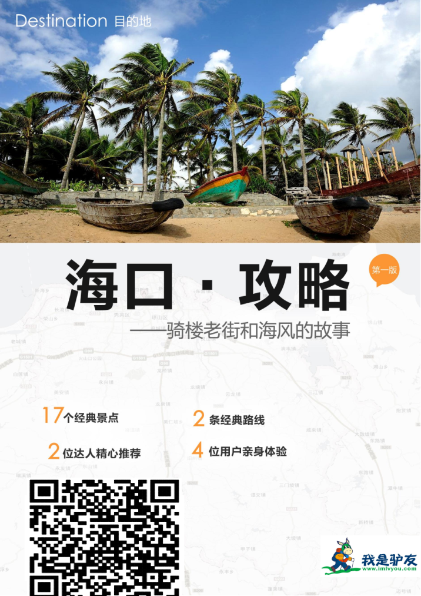
样本量：235，平均评分：3.64
平均消费：148.94 元，平均门票：0.0 元，平均停留：4.54 小时
高频季节：冬季(64) / 夏季(61)
高频交通：空调大巴(25) / 飞机+大巴(22) / 高铁+大巴(21)
游客来源：西藏自治区(14) / 广东省(13) / 辽宁省(12) / 重庆市(10) / 湖南省(10)
素材：海口旅游攻略
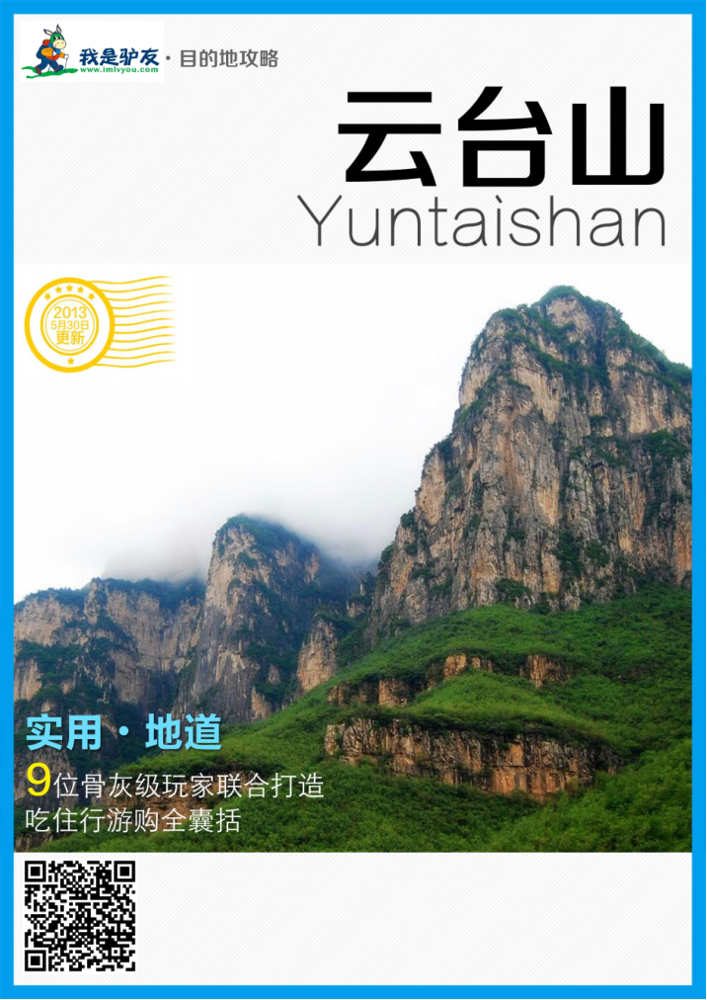
样本量：234，平均评分：4.73
平均消费：298.99 元，平均门票：120.0 元，平均停留：4.61 小时
高频季节：夏季(74) / 春季(60)
高频交通：高铁+大巴(31) / 飞机+大巴(25) / 空调大巴(21)
游客来源：四川省(12) / 内蒙古自治区(10) / 吉林省(10) / 澳门特别行政区(9) / 江苏省(9)
素材：云台山
样本量：234，平均评分：4.67
平均消费：222.45 元，平均门票：70.0 元，平均停留：4.87 小时
高频季节：春季(69) / 夏季(57)
高频交通：高铁+大巴(25) / 飞机+大巴(22) / 空调大巴(14)
游客来源：河南省(14) / 内蒙古自治区(12) / 福建省(10) / 重庆市(9) / 云南省(9)
素材：未匹配
样本量：234，平均评分：4.6
平均消费：220.08 元，平均门票：50.0 元，平均停留：4.22 小时
高频季节：秋季(68) / 冬季(62)
高频交通：高铁+大巴(27) / 飞机+大巴(26) / 空调大巴(24)
游客来源：河北省(10) / 内蒙古自治区(10) / 湖北省(10) / 宁夏回族自治区(10) / 河南省(9)
素材：未匹配